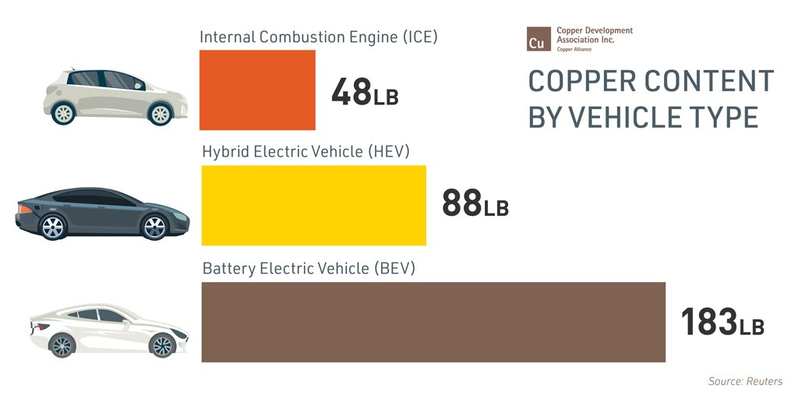

We at ElecSol have created an info web page about electric energy and solar energy.
We work towards providing better information and all the latest updates and inventions in electric and solar energy.
We also provide easy ways to install solar panels and other equipments by providing proper study about it. We provide installation at one click.
Electric Energy:
MAJOR ISSUES---
• Rural Electrification
• Generation
• Transmission
• Distribution
• Recovery of Cost of services & Targetted Subsidies.
• Technology Development and Research and Development (R&D)
• Competition aimed at Consumer Benefits
• Financing Power Sector Programmes Including Private Sector Participation.
• Energy Conservation
• Environmental Issues
• Training and Human Resource Development
• Cogeneration and Non-Conventional Energy Sources
• Protection of Consumer interests and Quality Standards
The impact of electric vehicles on electricity demand
Many in the industry are relying on electric vehicles (EVs) to reverse the downward trend in global electricity
consumption. But a new report from Redburn, a UK research and investment company, suggests the growing energy
efficiency of EVs means that the industry and investors may have to look elsewhere for significant boosts in
demand for electrical power, says energy expert Fereidoon Sioshansi of EEinformer.
Until recently, the demand for electricity – like that of oil – was always rising. Over the years, as new
electricity consuming gadgets were invented and commercialised on a massive scale – starting with incandescent
light bulbs, radios, refrigerators, motors, fans, washers and dryers, dishwashers, TVs, air conditioning,
electronic devices, personal computers, printers and so on – the demand kept rising.
Economic growth, wages, income levels and other factors would impact the rate of growth, but grow it did for
over a century. The saying within the industry was that if you overbuilt and over-invested, all you had to do
was to wait a few years for demand to catch up.
That maxim rarely failed, until the bottom fell out of demand growth. Consumers in developed economies already
had all they needed or wanted – and as devices became more efficient, they used fewer kWhs. And as buildings
became more efficient and better insulated, less electricity was needed to light, heat or cool them. Moreover,
the pace of economic and population growth began to slow down – with declining birth rates and aging population
in parts of Europe, Japan, the US and elsewhere.
Some in the industry are literally salivating at the prospects of EVs and, more broadly, the electrification of
the transport sector to boost electricity demand
The question is what can we expect for demand growth moving forward? Will new uses for electricity – most
notably to charge increasing numbers of electric vehicles (EVs) as well as the electrification of heating,
industrial processes and other energy-intensive applications reverse this trend, and if so by how much and how
soon?
Some in the industry are literally salivating at the prospects of EVs and, more broadly, the electrification of
the transport sector to boost electricity demand in the same way that the commercialisation of air conditioning
did in the 1950-70s – a trend that is still strong in many developing economies.
Gains in energy efficiency
That, however, may be wishful thinking, according to an analysis by James Moore, partner in capital goods
research at Redburn in London. Moore and his colleagues, who have looked at the numbers, do not expect the
electrification of the cars to dent the established trends towards reduced electricity consumption. The reason?
Ever more energy-efficient lighting and motors will offset any gains in increased EV electricity consumption.
This, of course, is not what people in the power sector want to hear.
According to Moore, roughly 60% of US electricity consumption comes from just four end uses:
Lighting
Heating, ventilation and air conditioning (HVAC)
Machine drive
Appliances
A closer look at these four categories reveals that the electricity-consuming component of HVAC, machine drive
and some appliances – notably washing machines, tumble dryers and vacuum cleaners – is the motor.
In fact, Redburn’s research leads them to conclude that motors are the world’s biggest electricity-using
product, ahead of lighting, accounting for an astonishing 30-35% of world’s electricity consumption. Not
surprisingly, as motors get more efficient, demand for electricity can be expected to fall, all else being
equal.
Since Moore and his colleagues work in the capital goods division of Redburn, they know who makes the big
motors – a handful of big players including ABB, Siemens, Schneider Electric and many smaller component
manufacturers and suppliers.
It turns out that these manufacturers and their suppliers are confronted by ever more efficient standards
forcing them to make their motors, particularly the big ones, more efficient. Aside from that, customers who
know how much electricity is consumed by big motors are demanding more efficient ones.
Moore and his colleagues, who have looked at the numbers, do not expect the electrification of the cars to dent
the established trends towards reduced electricity consumption. The reason? Ever more energy-efficient lighting
and motors
According to Redburn, the prevailing standard efficiency IE1 motors are being banned and premium efficiency IE3
motors will become mandatory around the world – saving as much as 13% depending on the size of the motor. Moore
says it will take roughly 15 years for the entire installed motor base to be replaced with the new standard,
which will reduce global electricity demand by 0.7% per annum.
A similar scenario applies to lighting – currently accounting for roughly 22% of the global electricity demand.
Here again, significant reductions in consumption can be achieved by switching to more efficient types of
lighting, such as light emitting diodes (LEDs), which currently account for 20% of new global lighting unit
sales.
The savings can be significant – for example:
90% by replacing incandescent light bulbs with LEDs
75% by moving from compact fluorescent lights to LEDs
Lighting technology is getting brighter and cheaper
With incandescent light bulbs expected to fall from the current 80% of the installed base to 20% by 2023,
Redburn expects the global lighting electricity consumption to halve in the next five years. This alone should
reduce global electricity demand by 2.3% per annum. The pattern is already obvious in falling electricity sales
in many parts of the world. You don’t need very many kWhs to enjoy many lumens of lighting.
Combined, these two end uses alone can reduce global annual electricity demand growth to roughly 3% below
global real GDP growth in the coming five years – it is the sort of transformation described in DNV’s recent
energy outlook. Of course, that is not the end of energy efficiency improvements.
EV electricity consumption
Won’t the expected rise of demand from EVs more than offset the gains from energy efficiency? The short answer,
according to Redburn is, not necessarily.Examining several studies on the impact of EVs, Redburn expects
average global electricity consumption from EVs to grow from around 8TWh in 2017 to 1,800TWh by 2040. While
this is a massive increase, it represents only 5% of projected global electricity consumption in 2040 – not a
huge percentage.
Why so little? The simple answer – which must be most annoying to utility executives the world over – is that
EVs are incredibly efficient, certainly compared to internal combustion engines (ICEs).
“Investors seemed surprised that EVs will not boost electricity demand growth more, but no one has made any
legitimate challenges to either Redburn’s methodology or the numbers”
According to Redburn: “Filling a vehicle with oil is one of the most expensive ways to purchase a usable unit
of mobility: by a factor of 4-5x. This is because ICE vehicles are inefficient and fuel taxes are high,
especially in Europe.
“Moreover, driving 100km in a conventional vehicle requires roughly 80kWh of energy, because ICEs waste some
75-80% of their fuel generating heat rather than mechanical energy – the clue is in the word ‘combustion’.
Moreover, a typical ICE has as many as 1,000 moving parts as opposed to 70-80 or fewer for an EV.
“This means that the average EV needs as little as 25kWh to travel 100km, even after accounting for the energy
lost during charging and ‘vampire losses’ as the battery mildly depletes over time. Divide 80kWh/100km by
25kWh100 km and the result shows EVs are 3.3x more efficient if not better.”
EVs are incredibly efficient, certainly compared to internal combustion engines
Redburn expects EV sales to take off after 2023 as:
Battery costs continue to decline
Range continues to improve
Charging infrastructure becomes ubiquitous
Fast charging is in place for autonomous EVs
By 2023, Redburn expects 61% of new car sales to be EVs with a fast rate of turnover, given that the global
fleet of ICEs, on average, reaches retirement age in 18 years.
According to Redburn: “While the ‘peakiness’ of fast-charging load profiles of EVs will need to be managed by
utilities, we only expect EVs to add 3% to global electricity demand by 2035, the equivalent of 0.2% per annum
demand growth. As such, while many players in the power industry talk about EV as the next big thing, we do not
expect the electrification of the car to in any way dent the electricity consumption reduction caused by more
energy-efficient lighting and motors.” (emphasis added)
While Redburn’s projections on EV sales are in line with many other main-stream studies, their prediction that
massive EV sales will not have much of an impact on electricity sales – due to the offsetting impact of energy
efficiency gains – is surprising, contradicting those who expect a much bigger rise in electricity consumption.
Advantages of an Electric Car:
• No Gas Required. Electric cars are entirely charged by the electricity you provide, meaning you don't need to
buy any gas ever again. ...
• More Convenient. ...
• Savings. ...
• No Emissions. ...
• Popularity. ...
• Safe to Drive. ...
• Cost-Effective. ...
• Low Maintenance.
To make sure we were not misinterpreting their findings, we contacted Moore, who responded that, “A number of
investors seemed surprised that EVs will not boost electricity demand growth more, but no one has made any
legitimate challenges to either Redburn’s methodology or the numbers.”
Asked what else may boost dormant electricity sales, Moore said Redburn is presently trying to determine to
what degree data centres will increase electricity demand, given the growth of information and communication
technologies, cloud computing, storage and the much-hyped Internet of Things.
USES OF ELECTRICITY IN AUTOMOBILES(ELECTRIC VEHICLES) :
Copper is an essential material component of electric vehicles (EVs). It is used in the electric motors,
batteries, inverters, wiring and in charging stations because of its durability, malleability, reliability and
superior electrical conductivity.
Copper's Role in EVs
Video Link: https://youtu.be/ww2mfs0vJb0
An EV can use between 85 and 183 pounds of copper and hybrid and electric buses can contain between 183 and 814
pounds.

Copper is also an indispensable component of the infrastructure needed to support electric vehicle charging. To
power the EVs of both today and tomorrow, a network of five million charging ports will be needed within the
next decade.
Benefits of Electrical Transportation :
Reduced Pollution
The transportation sector is now the largest source of carbon dioxide emissions in the U.S. The continued
integration of EVs will help reduce this impact because they produce 54 percent less carbon dioxide emissions
per mile than a conventional vehicle.
Cost Savings
EV batteries convert 59 to 62 percent of energy into vehicle movement while gas powered vehicles use 17 and 21
percent. EV drivers spend about $1.2 per gallon to charge, less than half the price of gasoline. The average
operating cost of an EV is $485 annually compared to $1,117 for a conventional vehicle.
Economic Growth
According to the U.S. Department of Energy, in 2017, the U.S. imported 19 percent of the petroleum it used.
Using Electric Vehicles can reduce our energy dependency abroad and support the U.S. economy through the
generation of new jobs, particularly in skilled electrical trades.
EV Trends and Developments
Increased Sales
Consumers are demonstrating strong interest in EVs and increasing demand. EVs accounted for only 1.3 percent of
total vehicles sold in the U.S in 2017. By third quarter 2018, that had nearly doubled to 2.5 percent; hitting
3 percent by the fourth quarter.
Proactive State Policies
States continue to raise clean energy goals with states like California, New Jersey, and New York setting a
number of new, ambitious targets and regulations. However, Not all state-news is positive, as some made plans
in 2018 to scale back net energy metering or renewable energy credit programs.
Support from Large Corporations
In 2019, companies like IKEA, HP and Unilever promised to ramp up integration of electric vehicles into their
corporate fleets and to assist employees in transitioning to cleaner transportation.
Industrial Uses
The electric power industry covers the generation, transmission, distribution and sale of electric power to the
general public and industry. The commercial distribution of electric power started in 1882 when electricity was
produced for electric lighting. In the 1880s and 1890s, growing economic and safety concerns lead to the
regulation of the industry. What was once an expensive novelty limited to the most densely populated areas,
reliable and economical electric power has become an essential aspect for normal operation of all elements of
developed economies.
Electric power is transmitted on overhead lines like these, and also on underground high-voltage cables
By the middle of the 20th century, electricity was seen as a "natural monopoly", only efficient if a restricted
number of organizations participated in the market; in some areas, vertically-integrated companies provide all
stages from generation to retail, and only governmental supervision regulated the rate of return and cost
structure.
Since the 1990s, many regions have broken up the generation and distribution of electric power[citation
needed]. While such markets can be abusively manipulated with consequent adverse price and reliability impact
to consumers, generally competitive production of electrical energy leads to worthwhile improvements in
efficiency[citation needed]. However, transmission and distribution are harder problems since returns on
investment are not as easy to find.
The organization of the electrical sector of a country or region varies depending on the economic system of the
country. In some places, all electric power generation, transmission and distribution is provided by a
government controlled organization. Other regions have private or investor-owned utility companies, city or
municipally owned companies, cooperative companies owned by their own customers, or combinations. Generation,
transmission and distribution may be offered by a single company, or different organizations may provide each
of these portions of the system.
Not everyone has access to grid electricity. About 840 million people (mostly in Africa) had no access in 2017,
down from 1.2 billion in 2010.
DOMESTIC USES OF ELECTRICITY :
HERE ARE THE 10 HOUSEHOLD ITEMS THAT USES THE MOST ELECTRICITY IN YOUR HOME
1. Heating
Percent Used: 27%
With the temperature frequently waning in a downward direction for many, the use of the heat in homes is necessary
to regulate the internal climate. In comparison to the cooling that homes can do, the use of heat within spaces
actually comes at a cost that is several times higher.
How to Save
In order to save on this expense however, there are several things that can be done to minimize the cost of
warming up your home. Instead of relying on adjusting the thermostat when the temperature drops, consider doing
your chores instead. The use of laundry machines and the oven actually generate a considerable amount of heat that
will warm up your spaces without costing you the same amount.
2. Cooling
Percent Used: 19%
The other method for controlling the temperature within our homes is using the air conditioner to cool things
off. For areas that experience more distinct seasons, its use rapidly increases during the warmer months, but
it can be activated at any time.
How to Save
The best way to go about reducing the energy it consumes is to rely on other methods for bringing down the
temperature in spaces. Two of the easiest ways to do this that require little to no energy are opening windows or
using fans. A device that could help you in both your cooling and heating efforts is a programmable thermostat,
which can be preset to warm and chill the house as desired. Use this to your advantage by having temperatures
fluctuate to energy-saving levels while you sleep or are away from the house. This can reduce the electricity that
the device consumes and save you money simultaneously.
3. Water Heater
Percent Used: 14%
Just behind the expense caused by manipulating the temperature of your spaces is the one that stems from
controlling the warmth of your water. In charge of that job is the hot water heater, a device that comes in
tank and tankless makes and various sizes. Tankless heaters require less energy of the two, as a coil system
within the appliance heats up water. For tank-based systems, water must be warmed and housed for use. Being
used for everything from showers to washing clothes, water heaters are relied upon daily and use a fair bit of
electricity in the process.
How to Save
To cut into the electricity used, check the temperature of your water heater. Often they are preset to 140
degrees Fahrenheit when in reality they could be dropped twenty degrees to a level that is just as effective
and that does not consume as much energy. Also, relying on low-flow showerheads and sink faucet aerators to
restrict your water use can further minimize the work your heater has to do and reduce its electricity
consumption.
4. Washer and Dryer
Percent Used: 13%
As an appliance that can be used several times a week within households, the heat and electricity required by
laundry machines makes them one of the main contributors to energy use within homes.
How to Save
Because two separate machines are used in the process, there are a few ways to reduce the electricity needed
when cleaning clothes. When using the washer, rely on the cold water function instead of the warm water to
reduce the workload of your heater. The process of drying requires more energy and can be made more efficient
by removing the machine’s lint trap and cleaning it before putting your clothes in. Be sure you are not
overfilling either of the machines during this time as it will prevent them from thoroughly cleaning their
contents and may require multiple uses. For drying, hanging clothes out on a line is another means of reducing
electricity use.
5. Lights
Percent Used: 12%
The most obvious electricity use culprits within our homes are the bulbs and fixtures that actually convert it
to light. And for many individuals, the habits that are deep seeded only work to exacerbate their usage as
leaving lights on or utilizing an excessive amount at a given time contribute to greater electricity use.
Luckily, there are many ways to save when it comes to lights.
How to Save
One of the most impactful adjustments that could be made to save electricity is making the switch to energy
efficient bulbs. This simple change will greatly cut back on the electricity used in the process of
illuminating your home. Of the bulbs available on the market, LEDs are the most efficient form of these lights
and they can last more than 20 times as long as traditional incandescent lights while converting the majority
of the energy they are supplied with to light. In comparison, only about 20% of the energy incandescents are
supplied with is released as light.
6. Refrigerator
Percent Used: 8%
In order to keep your food and other perishable items intact, the refrigerator is responsible for running on
electricity all day, everyday. In doing so, the fridge is consuming a significant amount of energy. In the
event your home has multiple refrigerators or a fridge that has been with the family for a number of years,
that consumption only increases.
How to Save
To remedy this, consider investing in a new refrigerator as over time they have been made more efficient to
ensure they consume less energy in the process of constantly cooling. While on your appliance search, keep any
eye out for an Energy Star certification. Energy Star is a voluntary program of the Environmental Protection
Agency and it certifies devices that save people money while protecting the environment as well. If you are not
interested in a new refrigerator, you’ll only need to set the internal temperature between 36 and 38 degrees
Fahrenheit and it will still be able to operate optimally while saving on electricity.
7. Electric Oven
Percent Used: 3%
When it comes time to cook, it is the oven that requires the most amount of energy to prepare our food. In
addition to heating dishes hundreds of degrees, some ovens have advanced features like self-cleaning
capabilities that help to make the process of preparing a meal easier. In order to do so however, electricity
is required. On top of that, the heat produced by the electric oven spreads throughout the house and may prompt
those within it to try and reduce the effects by using the air conditioner.
How to Save
To save electricity, consider making the switch from using the oven to using the microwave or toaster oven when
possible. Not only do they use less energy but they also don’t emit the same kind of heat that ovens do. And as
an added bonus, relying on alternative methods of preparation will allow your meal to be cooked faster.
8. Dishwasher
Percent Used: 2%
Following the conclusion of a meal, the process of cleaning up usually includes loading up the dishwasher and
allowing the machine to thoroughly rinse and dry our plates and utensils. In order to allow for a proper wash,
the appliance is supplied with warm water and proceeds to consume electricity until it is finished tidying up
the dishware.
How to Save
The process for reducing the electricity used by this appliance is not as savvy as is the case with other
appliances, but it will cut the energy that is consumed. For lighter loads of dishes, try handwashing instead
of resorting to using the machine. If you are set on using your washer, maximize your cleanings by only doing
loads once the washer is full.
9. Computer
Percent Used: 1%
The vast majority of homeowners don’t go a day without using their computer at least once and though it does
not contribute a significant amount to overall electricity use, it still adds to the consumption done within
homes.
How to Save
The amount of electricity used by computers can be reduced in a few easy ways. If you are currently in the
market for a desktop computer, consider purchasing a laptop instead. Laptops require less energy to be operated
and have the added bonus of being portable. Over time computers have become much more efficient as automatic
sleep settings that kick in after long periods of inactivity help to diminish the electricity that is wasted as
they sit around idling. And though sleep mode consumes almost as little power as a computer does when turned
off these days, in the event you are not planning on using your computer for a significant period, it is still
best to shut it down.
10. TV
Percent Used: 1%
Though the frequency of their use has been disrupted slightly with the rise of computer-based streaming
services, televisions are still used widely. And for many individuals, leaving the television on is done to
watch programs in addition to create background noise to fill rooms. Though many of us think of their
electricity use as being limited to the instances when they are on, televisions are also consuming energy when
they are turned off too. This stems from vampire energy that causes tv sets to use electricity in order to
remain in standby mode for a quick power up.
How to Save
To reduce this electricity use, consider using power strips which will allow for a concise power down when
unplugged. These can also be used to house cable boxes, speakers, or any other television accessories that will
no longer be in use once the tv has been turned off.
NEWS :
An electric vehicle battery that doesn’t need electricity for charging
New Delhi: What if you no longer had to plug your electric vehicle (EV), which uses expensive and heavy Lithium
ion batteries, into an electrical socket for charging?
What if there was a much lighter, cheaper and greener battery that uses just air, water and the metal aluminium to
generate electricity and does the job more efficiently by giving a driving range that’s more than double that a
Li-ion battery offers, that too without the need for electricity to charge it?
This could become a reality in the country a year or two down the line thanks to state-run oil marketing giant
Indian Oil Corporation (IOC) and Israeli clean energy startup Phinergy that are working on commercialising
Aluminium-Air (Al-Air) batteries for EVs in India.
Lighting up ultrafast magnetism in a metal oxide
The material studied was strontium iridium oxide (Sr3Ir2O7), an antiferromagnet with a bilayer crystal structure
and a large magnetic anisotropy. In an antiferromagnet, the magnetic moments, or electron spins, align in opposite
directions to neighboring spins. Anisotropy means the spins need to pay an energetic cost to rotate in any random
direction; they really want to sit pointing upwards or downwards in the crystal structure. The X-ray Scattering
Group of Brookhaven Lab's Condensed Matter Physics and Materials Science (CMPMS) Division has previously studied
this material (and a single-layer sister compound, Sr2IrO4), so they entered this study with a good understanding
of its equilibrium state.
"The very short laser pulses disturb the system, destroying its magnetic order," said first author Daniel Mazzone,
former group member and now an instrument scientist at the Continuous Angle Multiple Energy Analysis (CAMEA)
spectrometer at the Paul Scherrer Institute in Switzerland. "In this study, we were interested in seeing how the
system relaxes back to its normal state. We knew the relaxation occurs on a very fast timescale, and to take a
picture of something that moves very fast, we need very short pulses of illumination. With an x-ray free-electron
laser source, we can generate pulses short enough to see the movement of atoms and molecules. Such sources only
exist at five places around the world -- in the United States, Japan, Korea, Germany, and Switzerland."
In this study, the team ran experiments at two of the five facilities. At the SPring-8 Angstrom Compact
free-electron Laser (SACLA) in Japan, they conducted time-resolved resonant elastic x-ray scattering (tr-REXS). At
the x-ray pump-probe instrument of the Linac Coherent Light Source -- a DOE Office of Science User Facility at
SLAC National Accelerator Laboratory -- the scientists performed time-resolved resonant inelastic x-ray scattering
(tr-RIXS). In both scattering techniques, x-rays (probe) strike the material almost immediately after the laser
pulse (pump). By measuring the energy and angle of scattered particles of light (photons), scientists can
determine the material's electronic structure and thus magnetic configuration. In this case, the x-ray energy was
tuned to be sensitive to the electrons around iridium atoms, which drive magnetism in this material. While tr-REXS
can reveal the degree of long-range magnetic order, tr-RIXS can provide a picture of local magnetic interactions.
"In order to observe the detailed behavior of spins, we need to measure the energy change of the x-rays with very
high precision," explained co-corresponding author Mark Dean, a physicist in the CMPMS Division X-ray Scattering
Group. "To do so, we built and installed a motorized x-ray spectrometer at SLAC."
Their data revealed how magnetic interactions are suppressed not just locally but everywhere. This suppression
persists for picoseconds before the magnetic order returns to its initial antiferromagnetic state.
"The bilayer system does not have energetically low-cost ways to deform the magnetic state," explained Dean. "It
gets stuck in this bottleneck where the magnetism is out of equilibrium and is not recovering, at least not as
quickly as in the monolayer system."
"For most applications, such as data storage, you want fast magnetic switching," added Mazzone. "Our research
suggests systems where spins can point whichever direction are better for manipulating magnetism."
Next, the team plans to look at related materials and hopes to manipulate magnetism in more targeted ways -- for
example, changing how strongly two neighboring spins "talk to" each other.
"If we can change the distance between two spins and see how that affects their interaction, that would be really
cool," said Mazzone. "With an understanding of how magnetism evolves, we could tweak it, maybe generating new
states."
Report extract : Electricity
Lockdown measures have significantly reduced electricity demand, affecting in turn the power mix. Increases in
residential demand were far outweighed by reductions in commercial and industrial operations. Daily data collected
for more than 30 countries, representing over one-third of global electricity demand, show that the extent of
demand declines depends on the duration and stringency of lockdowns. On average we find that every month of full
lockdown reduced demand by 20% on average, or over 1.5% on an annual basis.
Demand reductions have lifted the share of renewables in electricity supply, as their output is largely unaffected
by demand. Demand fell for all other sources of electricity, including coal, gas and nuclear power. In our
projection for 2020, global electricity demand would fall 5%, with 10% reductions in some regions. Low-carbon
energy sources would far outstrip coal-fired generation globally, extending the lead established in 2019. A
faster, V-shaped economic recovery would cut the impact on electricity demand by half, leading to smaller
year-on-year falls for coal, gas and nuclear power. But longer lockdowns, slower economic recovery, and wide
diffusion of Covid 19 in developing countries could cut demand even further.
First quarter of 2020 - compared with first quarter of 2019
Global electricity demand decreased by 2.5% in Q1 2020, though lockdown measures were in place for less than a
month in most countries. China was the first to implement containment measures, in mid-January, and experienced
the world’s largest demand reduction in Q1 2020, of 6.5%. Impacts were more limited in other parts of the world,
where restrictions began in March and were introduced progressively. Electricity demand fell by 2.5% to 4.5% in
Europe, Japan, Korea and the United States in Q1 2020 relative to Q1 2019, not only because of Covid 19 but also
because weather in January and February was milder than in 2019.
Full lockdown measures pushed down electricity demand by 20% or more, with smaller effects for partial lockdowns.
After correcting for weather effects, full lockdowns have reduced daily electricity demand by at least 15% in
France, India, Italy, Spain, the United Kingdom and the US northwest. The largest impacts have been felt in
economies that implemented strict measures and those where services make up a larger part of the economy. Both of
these criteria apply to Italy, where electricity demand fell by over 25%. Periods of partial lockdown measures had
lesser impacts on electricity demand, up to 10% at most, during initial containment phases in Europe and the
United States and ongoing measures in Japan.
Changes to how and when electricity is used during lockdowns have transformed the shape of electricity demand over
the course of the day in some regions, with the pattern on weekdays now resembling the pattern usually seen only
on Sundays. Hourly electricity demand data for Spain demonstrate these marked changes in weekday patterns,
reflecting stringent lockdown measures that have sharply reduced commercial and industrial activities. Weekend
patterns are relatively consistent, driven mainly by residential demand.
The services sector has been hit hardest by lockdown measures, as retail, office, hospitality, education and
tourism activities were almost completely shut down in many major economies. Across the most affected economies of
the European Union, average weekday electricity demand for services declined considerably as March progressed. In
Italy, the hardest-hit country in Europe, declines reached 75% relative to the same period in 2019.
The impact on demand was less significant for the industry sector on average. Many factories have been able to
continue operations by applying precautionary measures to protect workers. In China the industry sector demand
dropped the most. Demand in the construction and manufacturing industry (which made up 68% of total demand in
2019) decreased by 12%
Residential electricity demand has increased in most economies as a result of lockdown measures. Most people are
spending more time at home and undertaking additional activities at home, such as teleworking. In the last week of
March and first week of April, residential demand during the week was up to 40% higher across certain European
economies than in the same weeks in 2019.
Full year projections for 2020
We expect global electricity demand to fall by 5% in 2020. This would be the largest decline since the Great
Depression and would be eight times the reduction in 2009 due to the global financial crisis. In 2009, continued
growth in China and India was able to largely offset reductions elsewhere. However, China and India are not in a
similar position in 2020. Their electricity demand growth was already slowing and they are both suffering
significantly from the Covid 19 crisis. A faster recovery would reduce electricity demand by 2% in 2020, as all
areas of economic activity resume. But wider spread of Covid 19 in Africa, Latin America and other areas of the
developing world, and a second wave in autumn in advanced economies, could lead to a decline of greater than 5%.
In economies that rely more heavily on industry, lockdown measures have less effect on electricity demand. In
China, industry accounted for more than 60% of electricity consumption in 2019, compared with 10% for services,
part of the reason that it would experience a smaller impact on overall electricity demand. In the United States,
industry only accounts for 20% of electricity demand, while the services sector accounts for almost 40%, leading
to more pronounced impacts on total electricity demand as non-essential services have been hit the hardest by
lockdown measures. Europe is set to feel the largest impact as hard hit services sectors play a central role in
its economy.
https://www.ceew.in/blogs/urban-households-consumed-less-electricity-during-lockdown-some-parts-india
https://www.energysage.com/electricity/future-of-electricity-electrification/
https://www.powerelectronicsnews.com/the-future-of-electricity/
HISTORY AND EVOLUTION OF ELECTRICITY :
Electricity is an essential part of modern life so vital that most of us cannot imagine a life without it. But –
amazingly – it has only been an everyday aspect of our lives for a little over a century.
Back in 1752, when Benjamin Franklin demonstrated that lightning was electrical with his famous kite experiment,
people couldn’t even fathom the many conveniences and luxuries that electricity would bring to the 20th and 21st
centuries.
Electricity in the Early Days
The first documentation in the history of electricity dates all the way back to 500 B.C. when Thales of Miletus
discovered static electricity by rubbing fur on amber. But it wasn’t until two thousand years later, in the 1600s,
that English physician and physicist William Gilbert published the first theories about electricity in his book,
De Magnete. The next major text about electricity, Experiments and Notes about the Mechanical Origin or Production
of Electricity was published in 1675 by English chemist and physicist Robert William Boyle.
The exploration of electricity went up a notch during the next century, though and things started heating up. In
the early 1700s – decades before Franklin’s kite – English scientist Francis Hauksbee made a glass ball that
glowed when rubbed while experimenting with electrical attraction and repulsion. The glow was bright enough to
read by, and this discovery would eventually lead to neon lighting a few centuries later.
Fast forward to September 1882, when a house in Appleton, Wisconsin became the first American home to be powered
by hydroelectricity. The station that powered the home used the direct current (DC) system developed by Thomas
Edison. Over the next several years, “the direct current versus alternating current (AC)” debate captured
attention, as Thomas Edison and George Westinghouse (who championed AC), competed for contracts.
The Discovery Of Electricity By Benjamin Franklin
In 1752, Benjamin Franklin ran his famous kite experiment that sparked the discovery of electricity. As a
prominent American scientist and one of America’s founding fathers, Franklin tied a key to a kite string during a
thunderstorm and proved that static electricity and lightning were one and the same thing. Following this historic
result, people were eager to try to harness the power of electricity for the primary goal of lighting their homes
in a cheap and safe way instead of oil and gas lamps which were flammable and dangerous.
The World’s First Current & Electric Motor By Faraday
Fast forward to 1831, Michael Farady realized that an electric current could be produced by passing a magnet
through a copper wire. This amazing discovery formed the bedrock of today’s electricity and how we generate it,
through magnets and coils of copper wires in big power plants. Because of this principle, both the electric motor
(where electricity is converted into motion) and the generator (where motion is converted into electricity) were
born.
The World’s First Modern Power Grid
While electricity could be generated and transported, it had to be used the moment it was consumed as storage
(even till this day) is very costly and has limited utility. Samuel Insull saw an opportunity in the early 1900s
to bring together mass efficiencies in production and consumption. He consolidated all the smaller generators and
chose to generate electricity by bigger and more efficient generators manufactured by General Electric.
As he began to grow his customer base, Samuel began to create new electricity pricing plans to meet the growing
demands of his customers. One such scheme was a peak demand scheme, where customers that required a lot of
electricity in a short amount of time had to pay a fixed fee in addition to the typical usage charge.
The War of the Currents
Long before electric power in homes became mainstream, the standard form of electricity in the United States was
the DC system that Edison developed through General Electric. Nikola Tesla, a student of Edison, believed that AC
was a better option because, with the use of transformers, power could be converted to higher or lower voltages
much easier and more efficiently. (This website provides an explanation of the differences between AC and DC
current.) Edison argued – through what some refer to as a “misinformation campaign” – that AC was far more
dangerous. This battle peaked in 1893 at the Chicago World’s Fair when General Electric lost its bid to power the
fair to George Westinghouse, who was using Tesla’s AC system.
Eventually, because it was cheaper to distribute and could supply power to larger areas, AC became the new
standard for electricity in the U.S.
The Evolution of Wiring and Electrical Components
In the earliest days of home electrification, electricity was often carried place to place by bare copper wires
with minimal cotton insulation. Sockets, switch handles, and fuse blocks were made of wood. There were no voltage
regulators and lights would dim and brighten in response to demand placed on the electrical grid. From about 1890
to 1910, knob and tube wiring was used for electric installation. In this early set-up, hot wires and neutral
wires were run separately and were insulated using rubberized cloth, which degraded over time. From the 1920s to
the 1940s, flexible armored cable, which offered some protection from wire damage, became commonplace. During the
1940s, electricians began using metal conduit, in which several insulated wires were enclosed in rigid metal
tubes.
During these years, the potential for danger was much higher than it is today because wires weren’t grounded. If
one of the “hot” wires became damaged or some other mishap caused the electrical current to escape the wiring
pathways, fire or severe electrical shock was often the result.
After 1965, grounded wires, which direct stray electrical current back into the ground, created a safer
environment for homeowners. (If your house was built before 1965, ground circuit fault interrupters [GFCI] are a
great upgrade option. Check with a licensed electrician for more information.) Most modern homes also have circuit
breakers that immediately shut off power if they sense an overload, providing additional safeguards.
Electricity in the Modern Era
Well into the 20th century, most Americans continued to illuminate their homes using gas lamps. In 1925, only half
of American houses had electrical power. Thanks in great part to FDR’s Rural Electrification Act of 1936, by 1945,
85 percent of American homes were powered by electricity, with virtually all homes having electricity by 1960.
Initially, electricity was used primarily for lighting. But as appliances like vacuum cleaners, refrigerators, and
washing machines became more popular starting in the 1950s, demand for electricity grew by leaps and bounds. With
today’s myriad appliances and electronic devices, it’s essential to have wiring and components that can handle the
heavy load required to power our modern lives.
As we settle into the 21st century, electricity continues to evolve, yet innovations – at least when it comes to
our sources of power – have come more slowly. Coal, petroleum, and natural gas have been our primary sources of
electrical production since the early 20th century, and alternating current still reigns.
But, there are changes underway.
The Future of Electricity
According to the Center for Climate and Energy Solutions, renewable energy is the fastest-growing source of
electricity in the United States, increasing 67 percent from 2000 to 2016. Eco-conscious entrepreneurs are
committed to the transition from fossil fuels to renewable electricity – which includes not only wind and solar,
but also a renewed focus on hydroelectric power. As technology improves over the next few decades, a transition to
renewable power sources as our primary producers of electricity is likely. And, as our appliances – and our homes
– get “smarter,” the demand for electricity and new innovations will continue to grow.
In addition, direct current has been making a comeback: LEDs and computers use DC, and engineers have learned that
DC may actually be more efficient than AC when transmitting millions of volts over large regions. New DC
transformers are able to convert from low to very high voltages just like traditional transformers do with AC.
Increased use of electric cars, which operate on DC power, will also push the demand for DC. The International
Energy Agency projects that the number of electric cars on the road worldwide will expand from 3 million in 2017
to 125 million by 2030. Finally, using DC power allows for easy integration of wind and solar energy into the
electrical grid.
And who knows the bounds of all the possibilities? Elon Musk, the founder of SpaceX and Tesla Motors, publicly
discussed theories in 2014, that an electric jet design would be possible.
The history of electricity is fascinating! Who knows what the future will bring?
ANALYITICAL DATA :
‘Big data’ might be a bit of a buzzword, but data analytics has already changed several industries and the
electricity sector is next. Data analytics helped Amazon become the retail powerhouse it is today, while companies
like Airbnb and Uber successfully applied big data to shake up the hotel and taxi sectors, respectively.
In the electricity sector, the growing decarbonization and decentralization of energy grids requires smarter and
more flexible solutions – and this is where Data Analytics comes in. Data enables real-time management of the grid
infrastructure, more reliable forecasting for investment and maintenance, and enables the development of new
energy business models and services.
Forecasting activities like predicting changes in power flow, making long-term investment decisions, and modelling
consumer behaviour all rely on the availability of both good data and data analytics. Also, data analytics
provides better insights into asset management, resource planning and dispatch for renewables, and demand
forecasting
For operations as well as operations of power generation, reporting is becoming more automated, and so too will
data analysis. This will allow operators to anticipate risks and respond faster to changes, for example, making it
easier to balance renewables and manage risks.
Settlement is already data intensive. Here, data analytics will help speed up and automate the process of
allocating metering data to the responsible market parties and allocating payments. This will be crucial to deal
with the increasing volumes of data from smart meters. Moreover, data analytics will be driving new business
opportunities, such as smart contracts, energy management across organizational boundaries and will support high
frequency energy trading.
However, there are still challenges to be overcome. The report looks at some of these challenges, including how to
effectively capture and share all this data, and how to manage data quality, privacy, and cyber-security.
Electricity is at the heart of modern economies and it is providing a rising share of energy services. Demand for
electricity is set to increase further as a result of rising household incomes, with the electrification of
transport and heat, and growing demand for digital connected devices and air conditioning.
Electricity consumption in Indian homes has tripled since 2000. The percentage of households with access to
electricity has increased from 55% in 2001 to more than 80% in 2017. In 2014, an electrified Indian household
consumed about 90 units (kWh) of electricity per month on an average; enough to run four tube-lights, four ceiling
fans, a television, a small refrigerator, and small kitchen appliances with typical usage hours and efficiency
levels in India. This is three-fourths of the average monthly household consumption in China, a tenth of that in
the USA, and a third of the world average. In this post, we take a closer look at data on India’s residential
electricity and the disparities in access and consumption across states. We also reveal some inconsistencies
between different sources, pointing to the need for better data.
All states show considerable increase in total residential electricity consumption in recent years according to
data compiled by the Central Electricity Authority (CEA) from distribution companies. Between 2004 and 2015,
states like Assam, Bihar, Chhattisgarh, and Jharkhand with low initial household electrification showed a high
growth rate of their residential electricity use (about 11%-16%). States with higher household electrification
like Delhi, Punjab, Haryana, and Tamil Nadu grew at lower, but still substantial, rates (6%-8%), with high
absolute numbers.
• One, an electrified household in Delhi consumes about 250-270 units or kWh of electricity per month on an
average, approximately the same average amount consumed by an electrified household in Germany. At the same time,
such an electrified household in Delhi consumes significantly more than other Indian cities (Chandigarh: 208
units; Ahmedabad: 160 units; Puducherry: 150 units; and Mumbai: 110 units). This is in part due to high ownership
of air-conditioners (12% of total households) and air-coolers (70%), and tariff subsidies in Delhi. Yet, other
socio-economic reasons still need to be examined.
• Two, electrified households in larger states like Maharashtra, Gujarat, and Tamil Nadu, with higher rates of
electrification, consume on an average a lower amount of about 80-90 units per month. Karnataka is on the lower
end with about 60 units. On the other hand, households in Punjab (about 150 units) and Haryana (about 110 units)
consume much more. While there may be some discrepancies in the data due to incorrect reporting on use and number
of consumers by distribution companies, the scale of these discrepancies is likely to be small given the limited
number of un-metered and illegal connections in the residential sector.
• Three, states like Uttar Pradesh (UP), Jharkhand, and Chhattisgarh show high monthly household electricity
consumption. It is unlikely that states with a high share of newly electrified households and low reliability of
power supply consume as high as an average household in Chandigarh or Mumbai. The reported household consumption
is high possibly due to metering issues. For instance, 40% of the total residential connections in UP are rural
un-metered connections. As their actual consumption is not metered, the distribution companies estimate their
consumption based on norms approved by the regulator (currently the norm is 144 kWh/kW/month, a high number).
Distribution companies have not conducted any sample studies to justify this norm despite being asked by the
regulators. High estimation of consumption from un-metered connections as well as measurement issues in metered
connections can mask the actual consumption.
Finally, the electricity consumption within states also exhibit significant inequity at the household level.
According to the National Sample Survey Office (NSSO)’s surveys, about 20% of electrified households consume less
than 30 units of electricity per month, while about 80% consume less than 100 units per month. In rural areas, 90%
of the electrified households consume less than 100 units. This distribution varies with states. In most states,
about 15-20% of all the households consume less than 30 units per month. The states consuming the least
electricity are Karnataka, West Bengal, Bihar, and Jharkhand. For more details on results see our recent report.
Rising electricity demand was one of the key reasons why global CO2 emissions from the power sector reached a
record high in 2018, yet the commercial availability of a diverse suite of low emissions generation technologies
also puts electricity at the vanguard of efforts to combat climate change and pollution. Decarbonised electricity,
in addition, could provide a platform for reducing CO2 emissions in other sectors through electricity-based fuels
such as hydrogen or synthetic liquid fuels. Renewable energy also has a major role to play in providing access to
electricity for all.
In the Stated Policies Scenario, global electricity demand grows at 2.1% per year to 2040, twice the rate of
primary energy demand. This raises electricity’s share in total final energy consumption from 19% in 2018 to 24%
in 2040. Electricity demand growth is set to be particularly strong in developing economies. Government policies,
market conditions and available technologies collectively set a course for electricity supply to shift towards
low-carbon sources, with their share increasing from 36% today to 52% in 2040 in the Stated Policies Scenario.
In the Sustainable Development Scenario electricity plays an even larger role, reaching 31% of final energy
consumption. In the Sustainable Development Scenario, electricity is one of the few energy sources that sees
growing consumption in 2040 – mainly due to electric vehicles – alongside the direct use of renewables, and
hydrogen. The share of electricity in final consumption, less than half that of oil today, overtakes oil by 2040.
Accelerated efforts on renewables, nuclear power and carbon capture technologies rapidly decarbonise electricity
supply, compensating for the sharp decline of coal-fired power generation and reducing power sector CO2 emissions
by three-quarters by 2040.
solar energy
Solar power is energy from the sun that is converted into thermal or electrical energy. Solar energy is the
cleanest and most abundant renewable energy source available, and the U.S. has some of the richest solar
resources in the world. Solar technologies can harness this energy for a variety of uses, including generating
electricity, providing light or a comfortable interior environment, and heating water for domestic, commercial,
or industrial use.
There are three main ways to harness solar energy: photovoltaics, solar heating & cooling, and concentrating
solar power. Photovoltaics generate electricity directly from sunlight via an electronic process and can be
used to power anything from small electronics such as calculators and road signs up to homes and large
commercial businesses. Solar heating & cooling (SHC) and concentrating solar power (CSP) applications both use
the heat generated by the sun to provide space or water heating in the case of SHC systems, or to run
traditional electricity-generating turbines in the case of CSP power plants.
Solar energy is a very flexible energy technology: it can be built as distributed generation (located at or
near the point of use) or as a central-station, utility-scale solar power plant (similar to traditional power
plants). Both of these methods can also store the energy they produce for distribution after the sun sets,
using cutting edge solar + storage technologies. Solar exists within a complex and interrelated electricity
system in the U.S., working alongside other technologies like wind power to transition the U.S. to a clean
energy economy.
All of these applications depend on supportive policy frameworks at the local, state and federal level to
ensure consumers and businesses have fair access to clean energy technologies like solar.
Solar Industries India Limited is engaged in manufacturing of complete range of industrial explosives and
explosive initiating devices. It manufactures various types of packaged emulsion explosives bulk explosives and
explosive initiating systems. The company has also forayed into manufacturing of ammunition for military
applications. The company has the world's largest packaged explosives manufacturing facility at a single
location in Nagpur India. The company has pan India presence with 25 manufacturing facilities. At the global
level Solar Industries has presence in more than 51 countries with manufacturing facilities in 5 countries.
Solar Industries supports major mining and infrastructure companies including global names such as Coal India
Limited Singareni Collieries Vedanta Ltd and many more in global market.Solar Industries India Ltd was
incorporated on February 24 1995 with the name Solar Explosives Limited. The company was promoted by
Satyanarayan Nuwal Nandlal Nuwal and Kailashchandra Nuwal. By the year 1996 Solar established trade network as
well as Institutional market.
Uses of solar energy in automobile sector
Several prototypes of solar cars, powered only by the sun, have been built and tested, since ‘70s. These
vehicles were not
intended as day-to-day transportation devices, but are rather demonstration vehicles and engineering exercises
(Ozawa et al.,
1998; Gomez de Silva and Svenson, 1993). But, in spite of some spectacular advances, the high costs, the need
of minimizing
weight, friction and aerodynamic losses and the absence, in most cases, of a storage system of adequate
capacity able to assure
a regular operation without solar radiation make these vehicles quite different from the current idea of car.
Instead, the idea to apply PV panels on a Hybrid Electric Vehicle appears more realistic. The attention to such
vehicles dates to
the 90’s, when some pioneering prototypical applications appeared (Seal and Campbell, 1995). In recent years,
the French
company Venturi has realized different concept cars, including Venturi Astrolab (Fig. 2), presented as the
first hybrid solar
vehicle in sale. And, recently, a model of Toyota Prius integrated with a solar panel has been produced; in
this case the solar
energy is used to power the air conditioning system.
A wide overview over the Vehicle Integrated Photo Voltaic (VIPV) is reported by Letendre et al. (2003). The
opportunities
offered by the integration of electric vehicles with grid and stationary systems are remarked (Vehicles
connected To Grid,
V2G; Plug-in Hybrid Electric Vehicle, PHEV). But, despite their potential interest, solar hybrid cars have
received relatively
little attention in literature until a few of years ago (Letendre et al., 2003), particularly if compared with
the great effort spent
in last years toward other solutions, as hydrogen cars, whose perspectives are affected by critical issues
regard to hydrogen
production, distribution and storage.
Tractors and Carts
Right now, solar tractors (a close cousin to the electric tractor) are more theoretical than practical. But
with some
DIY skills, you can actually use solar panels to power your existing tractors!
If you would like to try that kind of project on a smaller scale, you can also convert your traditional golf
carts and
other small vehicles to use solar panels instead. This makes it easier and cleaner than ever for you to travel
around
SOLAR TRANSPORTATION
One of the biggest concerns today is the end of petroleum in the future. It’s interesting to know that solar
energy in many cities across the globe is being used for transportation purposes. To create a brighter future
for all, introducing solar energy into the transportation sector can help solve the environmental issues
related to pollution. The all-electric vehicles, hybrids, and vehicles that run on photovoltaic (PV) energy can
use solar energy to move and this can be done daily.
Since solar energy is so useful, low cost, environment-friendly and never-ending source of energy, everyone
should choose to go environment-friendly by getting solar panels installed at the rooftop of their buildings.
These solar panels are not only long-lasting but also low maintenance.
There are many solar panel manufacturers and solar panel suppliers such as HVR Solar who have expertise in the
installation and maintenance of these solar panels. Being the leader in the industry, HVR Solar is also the
manufacturer and supplier of several solar equipments. So, don’t wait! Become a responsible human towards the
environment and #SwitchToSolar.
https://freedomsolarpower.com/blog/7-uses-of-solar-energy
Solar industry
Solar power is the conversion of energy from sunlight into electricity, either directly using photovoltaics
(PV), indirectly using concentrated solar power, or a combination. Concentrated solar power systems use lenses
or mirrors and solar tracking systems to focus a large area of sunlight into a small beam. Photovoltaic cells
convert light into an electric current using the photovoltaic effect.[1]
A solar photovoltaic system array on a rooftop in Hong Kong
The first three concentrated solar power (CSP) units of Spain's Solnova Solar Power Station in the foreground,
with the PS10 and PS20 solar power towers in the background
This solar resource map provides a summary of the estimated solar energy available for power generation and
other energy applications. It represents the average daily/yearly sum of electricity production from a 1
kW-peak grid-connected solar PV power plant covering the period from 1994/1999/2007 (depending on the
geographical region) to 2015. Source: Global Solar Atlas
Photovoltaics were initially solely used as a source of electricity for small and medium-sized applications,
from the calculator powered by a single solar cell to remote homes powered by an off-grid rooftop PV system.
Commercial concentrated solar power plants were first developed in the 1980s. As the cost of solar electricity
has fallen, the number of grid-connected solar PV systems has grown into the millions and gigawatt-scale
photovoltaic power stations are being built. Solar PV is rapidly becoming an inexpensive, low-carbon technology
to harness renewable energy from the Sun. The current largest photovoltaic power station in the world is the
Pavagada Solar Park, Karnataka, India with a generation capacity of 2050 MW.[2]
Concentrator photovoltaics (CPV) systems employ sunlight concentrated onto photovoltaic surfaces for the
purpose of electrical power production. Contrary to conventional photovoltaic systems, it uses lenses and
curved mirrors to focus sunlight onto small, but highly efficient, multi-junction solar cells. Solar
concentrators of all varieties may be used, and these are often mounted on a solar tracker in order to keep the
focal point upon the cell as the sun moves across the sky.[175] Luminescent solar concentrators (when combined
with a PV-solar cell) can also be regarded as a CPV system. Concentrated photovoltaics are useful as they can
improve efficiency of PV-solar panels drastically.[176]
In addition, most solar panels on spacecraft are also made of high efficient multi-junction photovoltaic cells
to derive electricity from sunlight when operating in the inner Solar System.
Floatovoltaics
Floatovoltaics are an emerging form of PV systems that float on the surface of irrigation canals, water
reservoirs, quarry lakes, and tailing ponds. Several systems exist in France, India, Japan, Korea, the United
Kingdom and the United States.[177][178][179][180] These systems reduce the need of valuable land area, save
drinking water that would otherwise be lost through evaporation, and show a higher efficiency of solar energy
conversion, as the panels are kept at a cooler temperature than they would be on land.[181] Although not
floating, other dual-use facilities with solar power include fisheries.[182]
Solar updraft tower
The solar updraft tower (SUT) is a design concept for a renewable-energy power plant for generating electricity
from low temperature solar heat. Sunshine heats the air beneath a very wide greenhouse-like roofed collector
structure surrounding the central base of a very tall chimney tower. The resulting convection causes a hot air
updraft in the tower by the chimney effect. This airflow drives wind turbines, placed in the chimney updraft or
around the chimney base, to produce electricity. As of mid 2018, although several prototype models have been
built, no full-scale practical units are in operation. Scaled-up versions of demonstration models are planned
to generate significant power. They may also allow development of other applications, such as to agriculture or
horticulture, to water extraction or distillation, or to improvement of urban air pollution
Solar Industries India Limited is engaged in manufacturing of complete range of industrial explosives and
explosive initiating devices. It manufactures various types of packaged emulsion explosives bulk explosives and
explosive initiating systems. The company has also forayed into manufacturing of ammunition for military
applications. The company has the world's largest packaged explosives manufacturing facility at a single
location in Nagpur India. The company has pan India presence with 25 manufacturing facilities. At the global
level Solar Industries has presence in more than 51 countries with manufacturing facilities in 5 countries.
Solar Industries supports major mining and infrastructure companies including global names such as Coal India
Limited Singareni Collieries Vedanta Ltd and many more in global market.Solar Industries India Ltd was
incorporated on February 24 1995 with the name Solar Explosives Limited. The company was promoted by
Satyanarayan Nuwal Nandlal Nuwal and Kailashchandra Nuwal. By the year 1996 Solar established trade network as
well as Institutional market.
DomesticUse
We all know that our natural resources such as petroleum, coal, and others are going to end someday. Hence,
saving our natural resources is the biggest concern we all are going through. One of them is saving electricity
and using alternatives like Solar Energy that are long-lasting as well as cheaper in comparison.
Solar energy is the best alternative one can use to generate electricity in our daily lives. It is the biggest
form of renewable energy that is never going to end, hence is available forever. Solar energy is stored in
solar panels and used for several purposes in the form of electrical energy for daily usage. Once you get it
installed by a solar panel manufacturer, you can use solar energy to do several things in daily life
Our sun is the source of all life on Earth, and solar energy is useful to us in many different ways. The sun
creates two main types of energy – light and heat – that we can harness for many activities ranging from
photosynthesis in plants to creating electricity with photovoltaic (PV) cells to heating water and food. So,
what are some uses of solar energy? Let’s explore some common uses and benefits of sunlight in our daily lives.
1. SOLAR ELECTRICITY
This is one of the solar energy applications that has gained a lot of momentum in recent years. As solar panel
costs decline and more people become aware of the financial and environmental benefits of solar energy, solar
electricity is becoming increasingly accessible. A distributed solar PV system is typically installed on the
rooftops of homes or businesses. These solar power systems generate electricity to offset the property owner’s
usage and send any excess production to the electric grid.
A solar battery can connect to your solar power system to enable you to use solar after the sun goes down,
power an EV overnight, or provide backup power during emergencies. Some homeowners may choose to go completely
off the grid with a solar power and battery system or a solar power and generator system.
In some cases, solar PV may be installed on an adjacent structure such as a barn or mounted to the ground, and
then connected to the meter using underground cabling.
Other uses for solar energy include utility scale solar PV farms that can generate enough electricity to power
entire cities. An even more efficient solar technology is concentrated solar power (CSP). A CSP solar farm uses
mirrors to reflect and concentrate the sun’s energy towards a tower or other receiver, generating heat that can
power a turbine to create electricity. That thermal energy may be stored before powering a generator, which
makes it a more flexible source of electricity than solar PV. The world’s largest CSP solar farm is the 390
megawatt (MW) Ivanpah project in California’s Mojave Desert, although an even larger 580 MW CSP plant under
construction in Morocco may soon claim that title.
2. SOLAR WATER HEATING
Uses for solar energy extend to water heating systems. Most solar water heating solutions create hot water that
is consumed inside the home. Solar water heaters use a rooftop cell to absorb the sun’s heat and transfer it to
the water tank.
3. SOLAR HEATING
Typical uses of solar space heating systems include powering radiant floors or pairing with a Forced Hot Air
(FHA) system to heat a home. Passive solar home design can also heat homes and businesses in the winter by
taking into consideration the placement of windows and the selection of materials used in the building.
4. SOLAR VENTILATION
Solar ventilation solutions such as solar attic fans can reduce the burden of your HVAC by helping to cool your
home during the summer. This may be a good option if you are not able to install a solar PV system that offsets
your home’s entire electricity use. One innovative product is the Solatube solar attic fan.
Commercial and industrial applications of solar process heat include solar ventilation technologies that can
preheat a building’s air in cold climates, reducing energy costs.
5. SOLAR LIGHTING
Solar lights have become ubiquitous and can be found everywhere from home landscaping and security lights to
road signs and street lights. These solar lighting technologies for your home are inexpensive and readily
available from basic to high-end designs everywhere from your local hardware store to online shopping websites
such as Amazon.com.
One innovative use of indoor solar lighting, featured on Mashable, is the Solatube skylight that adds natural
light while reducing energy usage.
6. PORTABLE SOLAR
In our connected world, phones and tablets are always with us and, let’s face it, often running low on battery.
Portable solar PV chargers can keep our personal electric devices charged on the go. The technology already
exists to integrate solar cells into our phones and has been in watches since the 1970s (see the Citizen
Eco-Drive). Researchers in Japan have even developed lightweight, water-resistant solar cells that could
someday be sewed into clothing to power our devices.
3 Farming Tools Operated
By Solar Power
1. Livestock Fence Chargers
.
If you own livestock, then fencing is very important to your way of life. And, you need reliable electricity to
charge
the fence and keep the animals from escaping.
As an alternative to electrical energy, you can power these fences with solar energy instead. All you need are
the
appropriate solar panels and the skills to make your own solar charger.
Once you make your own charger, you can use your existing electric fence. And you’ll never have to worry about
how to power that fence again.
2. Water Pumps and Irrigation
Water is a major component of most farms. And, tasks such as remotely-watering the livestock is much easier
once you set up a well pump.
Solar power can make this entire process easier. Solar panels can power the pump with natural energy, allowing
you to pump water into the appropriate storage tank as long as the sun is out.
3. Air Heating
.
When you own a farm in the midwest, water isn’t the only thing that needs heating. You also need a safe and
reliable way to provide hot air for animals and farmers alike! You can do so entirely with solar energy by
adding
solar panels to your farm.
Solar heating is one of the most reliable forms of solar energy. With the right panels in place, your farm can
enjoy
the savings and other benefits that homeowners have been enjoying for years with solar energy.
Keep in mind that it’s very easy to add these panels to your existing setup. And you’ll start noticing the
benefits
almost right away!
News on Solar Energy
1.Tata Power DDL rolls out live peer-to-peer solar energy trading project
Synopsis:
Tata Power DDL and Power Ledger in collaboration with India Smart Grid Forum (ISGF) have rolled out live
peer-to-peer (P2P) solar energy trading, a first-of-its-kind pilot project in Delhi, a statement said.
This project enables development of an integrated ecosystem of grid-connected, distributed energy resources
including EV (electric vehicles) charging stations and battery energy storage systems that can directly
participate in the P2P marketplace.
Tata Power Delhi Distribution (TPDDL), a joint venture between Tata Power and the government of NCT of Delhi,
is a power distribution utility serving a population of 7 million in Delhi.
This project, announced during India Smart Utility Week, is a major milestone in advancing India's ambitious
renewable energy targets, while introducing the concept of energy trading to the world's second-biggest city,
the statement said.
"Tata Power-DDL is focused towards building a ‘Utility of the Future' and transforming the power distribution
space through innovative green technologies, collaborations and initiatives," Tata Power-DDL CEO Ganesh
Srinivasan said. Srinivasan further noted that "with growing rooftop solar power being available, we believe
that peer-to-peer solar power trading can offer customers the flexibility to buy green power from those who
have solar power in excess of their own consumption."
Under the project, an end total of about 150 sites that include TPDDL's locations as well as their actual
customers with solar generation (prosumers) will be using the platform to sell their excess energy to other
residential and commercial sites in a dynamic pricing environment, with benefit from P2P energy trades.
Consumers can choose which seller (prosumer) to buy electricity from, with Power Ledger's blockchain audit
trail of energy transactions providing neartime settlement and complete transparency throughout the entire
process,it explained.
This project enables development of an integrated ecosystem of grid-connected, distributed energy resources
including EV (electric vehicles)charging stations and battery energy storage systems that can directly
participate in the P2P marketplace.
"India is on a fast-track to a greener power mix with aggressive renewable energy targets that include 100GW of
solar energy, of which 40GW is to come from rooftop solar," said Power Ledger Co-Founder and Chairman Jemma
Green in the statement.
"Power Ledger's partnership with ISGF and a major energy provider like Tata Power-DDL is a major milestone in
advancing these ambitious targets and introducing the concept of energy trading to the world's second-biggest
city,” she added.
The first pilot of its kind in Delhi currently in progress between 65 prosumers and 75 consumer sites in the
capital - 140 buildings and counting.
The full-scale P2P trading trial will test out various trading logics and continue until June 2021, with
recommendations provided to the Regulator.
India is about to delicense power distribution business and make open access to retail customers enabling them
to buy electricity from anybody from anywhere. In that scenario, a blockchain platform for P2P trading of
electricity will be a perfect game changer for the clean energy revolution in the country.
"We have already done another successful pilot project in Uttar Pradesh. The results of these two projects
should instill confidence in the regulators to draw appropriate regulations for scaling up of P2P trading of
electricity in India," said Reji Kumar Pillai, President.
2. Basic customs duty up to 40% to be levied on solar imports from April 1 next year.
Synopsis:
A 40 per cent charge will be imposed on solar modules, while cells will attract 25 per cent. Already bid-out
projects will not be grandfathered in, MNRE notification clarified.
Domestic manufacturers have been anticipating the duty on solar equipment since FM Nirmala Sitharaman included it
in her union budget proposal in 2020.
A 40 per cent charge will be imposed on solar modules, while cells will attract 25 per cent. Already bid-out
projects will not be grandfathered in, the Ministry of New and Renewable Energy (MNRE) notification clarified.
"Considering India's huge solar targets and that electricity is a strategic sector of the economy, India needs to
develop domestic solar manufacturing capacities and reduce its dependence on imports to avoid disruption in
future," said the notification. ET has reviewed a copy of it.
Domestic manufacturers have been anticipating the duty on solar equipment since Finance Minister Nirmala
Sitharaman included it in her union budget proposal in 2020. Power and renewable energy minister RK Singh told
reporters in June last year that such a basics custom duty was supposed to be imposed from August 1, 2020 to
prevent the dumping of Chinese goods and protect national interests, where 80 per cent of solar equipment is
sourced from.
The government then decided to continue imposing safeguard duty on such imports for a third consecutive year as a
stop-gap solution. The basic customs duty was expected to replace the safeguard duty, as the former can only be
imposed for a maximum of four years and has to be progressively lowered owing to World Trade Organisation's (WTO)
safeguard measures. A duty of 14.9 per cent was levied on Chinese imports for six months from July 30, 2020 to
January 28, 2021, while the duty will be slightly lesser at 14.5 per cent for the following six months.
Disagreements over the "grandfathering" clause between the Ministry of Finance and the MNRE over providing
exemptions to power purchase agreements already signed delayed the implementation of the BCD till now.
Adding a "grandfather clause" to existing power purchase agreements would mean that there is an understanding
between solar developers and the government that the project costs more than the allocated budget at the time of
closing of the deal, and hence, compensation will be provided to the developers via the distribution companies.
3. Solar tariff could rise up to 40-45p/unit over customs duty change.
Synopsis:
Solar power prices could rise between 25-30 paise per unit if only cells are imported while the cost will rise
further to 40-45 paise if modules are imported, CARE Rating said.
The cheapest solar tariffs discovered in the auctions in 2020 was Rs 1.99 per unit which was possible due to
imports and cheap overseas funds, analysts had said.
CARE Rating said on Monday that solar power prices could rise between 25-30 paise per unit if only cells are
imported while the cost will rise further to 40-45 paise if modules are imported.
The cheapest solar tariffs discovered in the auctions in 2020 was Rs 1.99 per unit which was possible due to
imports and cheap overseas funds, analysts had said.
India has set an ambitious target of achieving 175 GW of installed renewable energy capacity, including 100 GW of
solar power by 2022. The long-term renewable energy capacity target stood at 450 GW by 2030, wherein solar power
will have the lion's share.
The BCD will give impetus to create a self-sustaining ecosystem for solar equipment manufacturing in India, but
solar makers located in the Special Economic Zones (SEZs) had urged the government to exempt BCD applicable on
them.
"Considering, that 43 per cent of solar panel manufacturing units and 63 per cent of solar cell manufacturing
units are located in SEZs, imposing BCD on SEZ units will impact the domestic solar manufacturing," Vikram Solar
MD Gyanesh Chaudhary said.
4. CSC, Tata Power to set up 10,000 solar micro grids in rural areas.
Synopsis:
CSC e-Governance Services India Managing Director Dinesh Tyagi said the collaboration will amplify the
government's ongoing campaign to provide clean and sustainable energy to households and businesses in rural areas.
To begin with, Tata Power has proposed to set up 10,000 micro grids to support rural consumers through Common
Service Centres.
CSC e-Governance Services India Managing Director Dinesh Tyagi said the collaboration will amplify the
government's ongoing campaign to provide clean and sustainable energy to households and businesses in rural areas.
"This partnership will increase energy access and provide an economic opportunity to the company by providing
off-grid or microgrid power. This will help rural customers move away from burning relatively expensive fuels such
as kerosene and can provide basic energy services and meet economic needs," Tyagi said in a statement.
Under the partnership, over 3.75 lakh CSCs will be involved in supplying solar water pumps to farmers and help in
setting up micro grids in residential and commercial establishments in rural areas.
The partnership is initially expected to create employment to a minimum two persons in each panchayat where
microgrid are proposed to be installed, thereby leading to generation of 20,000 jobs for rural youth.
CSC CEO Sanjay Kumar Rakesh said the association with Tata Power will help it reach out to farmers and rural
enterprises with clean energy solutions and will not only create new employment opportunities for Village Level
Entrepreneurs (VLEs) but also offer Tata Power a grasp over the potential rural market.
The micro grids will be supported by CSC VLEs at the ground level. VLEs will help in providing connection to rural
citizens, including MSME units for commercial purposes. The power available through these units would be
affordable, qualitatively better, decentralized and serviced by a local entrepreneur, as per the statement.
VLEs will also be trained in installation of domestic and commercial connection.
"This association will also meet the energy requirements of CSCs and address the need of 24-hours supply of
electricity to BharatNet in villages. A micro-grid has been piloted in five villages of Lakhimpur Kheri in Uttar
Pradesh and learning from this will be useful in full rollout," the statement said.
CSC has also approached Tata Power with a request to support a rental model for solar water pumps that can be
provided to 6,000 Farmer Produce Organisations (FPOs), which CSC is setting up to support farmers across the
country.
5. Anupam Rasayan to invest Rs 43 cr to set up a 12.5 MW solar power plant.
Synopsis:
"In a conscious move towards reducing dependence on non-renewable energy and cost saving measure, Anupam
Rasayan... has issued a letter of intent to install solar power by investing a sum of Rs 43 crore," the company
said in a regulatory filing.
Speciality chemical company Anupam Rasayan (NSE-0.48 %) India on Tuesday said it will invest Rs 43 crore to set up
a 12.5 megawatt (MW) solar power plant. "In a conscious move towards reducing dependence on non-renewable energy
and cost saving measure, Anupam Rasayan... has issued a letter of intent to install solar power by investing a sum
of Rs 43 crore," the company said in a regulatory filing.
The company said the entire capital expenditure of Rs 43 crore will be funded from its IPO proceeds.
The size of the proposed solar power plant will be 12.5 MW and will cater to the energy requirements of Anupam
Rasayan's major units.
The company operates six manufacturing facilities in Gujarat.
Anupam Rasayan came out with Rs 760 crore initial public offer (IPO) in March this year.
6. Okaya commissions 100 KWp hybrid solar plant in Himachal Pradesh.
Synopsis:
According to statement, the commissioned hybrid solar plant makes the unit self-sufficient for its daily energy
requirement and also supports the uninterrupted production process with continuous power supply even in the
scenario of unanticipated power cuts happening due to grid failure.
Hybrid solar systems generate power in the same way as a common grid-tie solar system but use special hybrid
inverters and batteries to store energy and operate as a backup power supply.
Okaya Power has commissioned 100 KWp hybrid solar plant at its manufacturing unit at Baddi in Himachal Pradesh.
The plant will generate more than 144 Mwh energy annually reducing its power consumption from the grid to 40 per
cent, a statement said.
According to statement, the commissioned hybrid solar plant makes the unit self-sufficient for its daily energy
requirement and also supports the uninterrupted production process with continuous power supply even in the
scenario of unanticipated power cuts happening due to grid failure.
Hybrid solar systems generate power in the same way as a common grid-tie solar system but use special hybrid
inverters and batteries to store energy and operate as a backup power supply. This is a great solution for
conserving energy sources by reducing wastage.
7. Tata Power Solar gets letter of award from NTPC for Rs 686 crore project
Synopsis:
With this addition, the order pipeline of Tata Power Solar stands at about 2.8 gigawatts (GW) with an approximate
value of Rs 13,000 crore, thereby cementing its position as India's leading solar EPC
(engineering-procurement-construction) player.
Tata Power Solar has got a letter of award for an order worth Rs 686 crore from state-owned power giant
NTPC (NSE 4.16 %), according to a statement. Tata Power Solar, India's largest integrated solar company and a
wholly-owned subsidiary of Tata Power, has received a letter of award (LoA) to build 210 megawatt peak (MWp) of
solar PV projects for NTPC, the statement said.
The total order value of the projects is about Rs 686 crore, it added. The commissioning deadline has been set as
November 2022.
With this addition, the order pipeline of Tata Power Solar stands at about 2.8 gigawatts (GW) with an approximate
value of Rs 13,000 crore, thereby cementing its position as India's leading solar EPC
(engineering-procurement-construction) player.
The scope of work includes land, transmission, engineering, procurement, installation and commissioning of the
solar projects. The NTPC project site is located in Gujarat.
Tata Power CEO and MD Praveer Sinha said, "We are pleased to announce the new win of this large solar EPC contract
from NTPC. Tata Power Solar is the leader in producing solar energy across the country and this further validates
Tata Power Solar's excellent execution skills in solar projects."
Over the years, Tata Power Solar has been India's leading solar rooftop EPC player with compelling economics,
especially for the commercial and industrial segment. Favourable government policies, and increased environmental
awareness have been the key growth drivers.
Tata Power Solar comes with a successful background of executing large projects such as the 250 MW Ayana at
Ananthapur, 50 MW Kasargod at Kerala, 56 MW Greenko, 30 MWp Solar Power Plant in Lapanga, Odisha and 105 MWp of
Floating solar at Kayamkulam.
Tata Power Solar has a portfolio of more than 5.4 GW of ground-mount utility-scale, over 515 MW of rooftop and
distributed generation projects and installation of over 36,000 pumps across the country till date.
8. Solar power companies plan move against dumping probe into Chinese imports
Synopsis:
The petition claimed that imports from these countries — which account for more than 90% of the solar equipment
used in the country — were priced lower than their cost and that they would be able to monopolise the entire
market by taking control of the manufacturing supply chain.
Solar power developers are now moving to quash an investigation by the Directorate General of Trade Remedies
(DGTR) looking to impose additional anti-dumping duties on solar equipment and component imports, people aware of
the matter said.
The developers – already reeling under high commodity costs, cancelled contracts and prospects of a new customs
duty of up to 40% on panels and cells from next April -- are hoping that the case can be thrown out based on a
rule by the DGTR that forbids anyone with less than 25% market share from making such a request.
Last month, domestic manufacturing association Indian Solar Manufacturers Association (ISMA), on behalf of just
two members Mundra Solar PV, Adani Group’s solar manufacturing arm, and Jupiter Solar Power, filed a petition to
impose duties on solar imports from China, Vietnam, and Thailand alleging global companies like Longi, Jinko, and
Trina are selling in India below their cost price, in an effort to dump their goods and corner the market
entirely. The petition claimed that imports from these countries — which cumulatively take up in excess of 90% of
the solar equipment used in the country — are priced lower than their cost prices, Subsequently, these companies
will be able to monopolise the entire market by taking control of the manufacturing supply chain.
Other major domestic manufacturers such as Tata Power (NSE 4.81 %) Solar, Waaree, Jakson, Moserbear Solar, Vikram,
and Websol — all part of ISMA who were not part of the petition — make up the rest of India's 15 GW module and 3
GW cell manufacturing capacity.
Adani's manufacturing unit is present in a special economic zone (SEZ), which receives special privileges and
enjoys exemptions on duties on imported machinery used to manufacture solar cells and modules.
Developers hope this should disqualify Adani (NSE-4.51 %) as a petitioner. Without Adani's 1,500 MW manufacturing
capacity, Jupiter will not be able to meet the 25% threshold on its own.
Interestingly, industry officials feel Adani Green – the group’s renewable arm --- have been the biggest
beneficiary of Chinese imports themselves and have been stockpiling for their solar projects.
On the advice of former DGTR officials who are familiar with anti-dumping laws, developers are cooperating with
the quasi-legal investigation and responding to their queries, but "under protest", said an executive, requesting
anonymity. "While we are not happy with the probe, we will send in responses by next week," the person quoted
above said.
Currently, developers can either choose to approach the DGTR directly, or move to Delhi High Court. While no
decision has been reached yet, companies that ET spoke to have maintained that they would avoid moving court if
they can quash the case at the DGTR level itself.
The dumping duties could potentially impact over 53,000 MW of projects that are currently under varius stages of
construction, as per Mercom India Research. Out of that, 7 GW are due for completion by the end of FY21.
Currently, a safeguard duty of 14.5% exists on solar imports coming into the country, which expires at the end of
July. The Ministry of New and Renewable Energy (MNRE) has also put in place a basic customs duty (BCD) of 40% on
modules and 25% on cells, which will come into effect from April, 2022. The local manufacturers like Jupiter hope
to plug in this eight-month gap with the DGTR ruling, though it is unclear if they want it to continue even after
the BCD is imposed.
In 1873, Willoughby Smith discovered photoconductivity of a material known as selenium. In 1887 there was the
discovery of the ultraviolet ray capacity to cause a spark jump between two electrodes and this was done by
Heinrich Hertz. In 1891 the first solar heater was created. In 1893 the first solar cell was introduced. In 1908
William J. Baileys invented a copper collector which was constructed using copper coils and boxes. In 1958, solar
energy was used in space. In the 1970′s, Exxon Corporation designed an efficient solar panel which was less costly
to manufacture. Less cost manufacturing process of solar panel became the major milestone in the history of solar
energy. In 1977 the US government embraced the use of solar energy by launching the Solar Energy Research
Institute. In 1981, Paul Macready produced the first solar powered aircraft. in the year 1982 there was the
development of the first solar powered cars in Australia. In 1999 the largest plant was developed producing more
than 20 kilowatts.
In 1999, the most proficient solar cell was developed with a photo-voltaic efficiency of 36 percent, now a day we
produce 200 megawatts to 600 megawatts electricity from solar energy like in India’s Gujarat Solar Park, a
compilation of solar farms spotted around the Gujarat region, show a mutual installed capacity of 605 megawatts
and Gol mud Solar Park in China, with an installed capacity of 200 megawatts.
First solar collector created by Swiss scientist named Horace-Benedict de Saussure in 1767, he takes an insulated
box enclosed with three layers of glass which suck up heat energy. After that Saussure’s box became famous and
widely known as the first solar oven, getting temperatures of 230 degrees Fahrenheit. After that in 1839 a most
important landmark in the progression of solar energy occurs with the significant of the photovoltaic effect by a
French scientist Edmond Becquerel. In this he used two electrodes placed in an electrolyte and then exposing it to
the light and results is tremendous electricity increased a lot. After that lots of experiment are occurred by
various scientists at time to time and modified our solar energy system to produce more electricity from solar
energy. But now a day’s also in this field various experiments are doing by a scientist, how to utilize maximum
solar energy which is available on the earth.
India's Growth Story of Harnessing Solar Energy
Tentative State-wise solar power target to be achieved by the year 2022 to reach cumulative achievement of 100,000
MW.Earlier a target of 20,000 Mw of grid connected solar power projects by 2020, was fixed in 2010 by Jawaharlal
Nehru National Solar Mission (JNNSM) which was revised in 2015 to 100000 MW by 2022. During the year 2015-16
nation has added (Table.4) 5526 MW, thereby reaching 12289 MW by March 2017. MNRE hopes to add 7750 MW during
2017-18, thereby reaching JNNSM target of 20000 MW, two years in advance. With regard to achievement against the
target for 2022 (Table.3), all states and UTs are showing keen interest and participated in the National Solar
Mission. The states that made achievement beyond 15 % are: Andhra Pradesh, Gujarat, Karnataka, Punjab, Rajasthan,
Tamil Nadu, Uttarakhand, Andaman Nicobar Islands, and Lakshadweep.
India’s Top Five solar energy producing state.
India’s prolific solar power-producing states are set to play a key role in the nation reaching its 450-gigawatt
renewable energy target by 2030
Karnataka and Andhra Pradesh are two of the largest states for solar power production in India.
The nation has placed high hopes on the technology delivering a large portion of its 450-gigawatt (GW) renewable
energy target by 2030 as it aims to reduce its fossil-fuel reliance.
India’s National Solar Mission was launched in 2010 – when just 10 (megawatts) MW of solar power was installed on
the grid – with a target of 20GW set for 2020. But due to significant activity within the solar power sector over
the following years, the country raised its target to achieve 100GW of solar capacity by 2022.
It is now the third-largest solar power producer in the world, with more than a third of its total energy capacity
produced from renewable sources.
The largest solar power-producing states are found in the west and south of the country.
Here, NS Energy profiles the top five states for solar power production in India.
Top five states for solar power production in India
1. Karnataka — 7,100MW
The south-western state of Karnataka heads India’s list of states producing solar energy. With a total installed
solar power capacity of about 7,100MW – notwithstanding the 1,000MW of projects in the pipeline – Karnataka is way
ahead of the other states.
Karnataka’s 13,000-acre Pavagada Solar Park (or Shakti Sthala) in Tumakuru district is the second-largest solar
power plant in India, having previously been the largest of its type in the world, with a production capacity of
2,050MW.
The state is likely to see three more ultra-mega solar power parks, each with a capacity of 2,500MW, in the
districts of Bidar, Koppal and Gadag.
2. Telangana — 5,000MW
Telangana has spread solar projects across more than 180 locations (Credit: Pixabay/mrganso)
The southern state of Telangana comes second in terms of solar power capacity in India.
Launched in 2014, following the bifurcation of Andhra Pradesh, Telangana’s total installed solar energy has
reached about 5,000MW – a figure it had set for itself to achieve by 2020. This includes standalone rooftop solar
units as well as grid-connected ones.
The state also opted for a distributed solar installation model, which has managed to rake in about 450 Indian
rupees crore worth of savings. Instead of concentrating these projects at a single location, Telangana has spread
them across more than 180 locations.
3. Rajasthan — 4,400MW
Rajasthan has a higher potential for solar power generation than any other region in the country – but it still
trails behind Karnataka and Telangana.
As of November 2019, the operational solar power projects in Rajasthan accounted for about 4,400MW of solar
energy, while 1,900MW more are in the pipeline. By 2025, Rajasthan aims to install a total capacity of 30,000MW of
solar energy.
The 14,000-acre Bhadla Solar Park in Jodhpur is currently the world’s largest fully operational solar park, with a
capacity of 2,245MW of installed solar energy. Rajasthan is also home to India’s only tower type solar thermal
power plant.
The central government has revealed plans for a 25,000MW ultra-mega renewable energy park. In the next three
years, during the project’s first phase, 10,000MW of solar power capacity will be installed in the state.
4. Andhra Pradesh — 3,470MW
Andhra Pradesh claims to be India’s second-largest state in terms of renewables, possessing about 10% of the
nation’s clean energy capacity.
With its solar and wind projects totalling about 7,700MW, the state’s cumulative capacity of commissioned solar
power is more than 3,470MW, placing it fourth on the list.
The region is home to the 1,000MW ultra-mega solar park in the district of Kurnool. Due to the rising demand for
power in the state, the government of Andhra Pradesh is planning for a 10GW mega solar power project. It intends
to supply free of charge, uninterrupted power to the agricultural sector.
5. Gujarat — 2,654MW
Out of Gujarat’s current total renewable energy production of 9,670MW, about 2,654MW is solar energy. The state is
planning to boost its renewable energy capacity to 30,000MW by 2022.
As of March 2020, it ranked top in India for domestic rooftop solar installations – with a total of 50,915 – which
is about 64% of the country’s total of 79,950 fittings.
To support India’s target of installing 100GW of solar capacity, of which 40GW has been planned through solar
rooftops, Gujarat is aiming for a solar energy capacity of 8,024MW by 2022, while bringing in 3,200MW via the
rooftop segment.
Gujarat’s single-biggest solar power generation capacity can be found in Patan district’s Charanka Solar Park,
which currently produces 600MW.
The 5 Countries That Produce the Most Solar Energy
Although more can be done to harness the power from that bright fireball in the sky, several countries have taken
the lead in capturing the sun’s energy and are using it as a viable source of electricity. By all accounts, the
sun is not going anywhere any time soon.
Over the years, the United States has made strides in positioning itself as a leader in solar energy production,
along with China, India, Japan, and Vietnam. Although solar power was once seen as a niche market, these countries
are proving that this source of renewable energy is a legitimate answer to the world’s search for alternatives to
fossil fuels.
KEY TAKEAWAYS
• China leads the world as the top producer of solar energy, installing more than 30.1 GW of photovoltaic (PV)
capacity in 2019.1
• The United States, India, Japan, and Vietnam rank next on the list of top solar producers.
• While China's PV market share was 27% for 2019, this is down significantly from 2017, when the nation's market
share reached 51%.2
• A record number of new countries are increasing their PV capacity, cutting into China's market dominance.
1. China
As the nation with the largest population and carbon footprint, China’s clear commitment to renewable energy is
encouraging. According to China's National Energy Administration, the country installed more than 30.1 GW of
photovoltaic (PV) capacity in 2019, bringing its total installed capacity to 205.2 GW.1
This PV capacity is enough for China to keep its market leader position with the Chinese market representing 27%
of total global installations. However, it's interesting to note that in 2017 China's market share was 51%.
China's declining dominance in the market coincides with a record number of new countries installing significant
PV capacity.1
The vast majority of photovoltaic products, or solar panels, are being installed in remote areas by giant solar
farms that sell the energy to utilities. Satellite imagery shows the incredible growth of these enormous solar
farms that continue to pop up all over China.
China’s drastic increase in solar power stems from the nation’s desperate need for electricity and its severe air
pollution crisis. While some nations have curbed incentives to install solar panels, China’s government is
aggressively encouraging financial institutions to give incentives for solar installations.3
2. United States
The United States has continued to improve its standing as a leader in solar power by expanding its utility
sector and residential market installations. Much of the increase is attributable to substantial government
incentives given to the residential sector, which is a fast-growing market segment.
In 2019, the U.S. utility sector saw an increase of 37% in installed capacity over 2018. The residential market
increased installed capacity by 15% in 2019 compared to 2018. The total new installed capacity for 2019 came in
at 13.3 GW, which brought the U.S. to 75.9 GW of cumulative installed capacity. As the cost of solar power
becomes more cost-competitive with nonrenewable resources, U.S. output is expected to continue to grow in the
years to come.1
3. India
India's steady rise as a leader in PV capacity has been impressive. After several years of concentrated effort,
India showed significant growth in 2019, reaching a 9% share of the global PV market for the year. The nation
surpassed Japan (which held a 6.3% share of the market) and trailed the U.S. (which held an 11.9% market
share).2
Most of India's capacity for the year was installed at utility plants, which accounted for the majority of its
10.1 GW new installed capacity for the year. At the end of 2019, the country's cumulative installed capacity
was approximately 42.9 GW.1
The International Energy Agency estimates solar energy production represents 700 million tons of CO2 savings
every year.
4. Japan
As one of the most densely populated countries in the world, Japan does not have the luxury of covering huge
swathes of land with solar panels. Despite its lack of abundant open space, Japan is still among the world’s
leaders in terms of total solar energy produced, with 7 GW of new installed capacity in 2019.1
After the Fukushima nuclear plant disaster in 2011, Japan made a serious commitment to solar energy as part of
a plan to double its renewable energy by 2030. Out of necessity, Japan found creative places to install solar
panels.5 A boom in the popularity of golf in Japan in the 1980s led to an overabundance of golf courses, many
of which were completely abandoned as of 2015. Many of these forgotten courses are now completely covered in
photovoltaic products.6
The island nation has even gone so far as to create floating “solar islands” with thousands of water-resistant
solar panels. These next-generation solar farms have several advantages including their ability to be more
efficiently cooled by water.
5. Vietnam
Rounding out the top five countries is Vietnam, which installed an estimated 4.8 GW in 2019. Vietnam's success
for the year was spurred by a government policy that encouraged investment in solar energy by guaranteeing
producers an above-the-market price. Because of this policy, the nation saw five times more installations than
initially projected by the government. Vietnam claimed 4.3% of the global PV market in 2019
Worlds largest solar park
Bhadla Solar Park
Bhadla Solar Park is the largest solar park in the world as of 2020, and is spread over a total area of 5,700
hectares (14,000 acres) in Bhadla, Phalodi tehsil, Jodhpur district, Rajasthan, India.[1]
The park has a total capacity of 2245 MW.[1] The park had witnessed the lowest bid for solar power in India as
of December 2020 at ₹2.44 (3.4¢ US) per kilowatt-hour.[4][5] In September 2018, Acme Solar announced that it
had commissioned India's cheapest solar power: 200 MW at Bhadla.
Location
Officially recognized as a sandy, dry, and arid region with an area of about 45 km2 (17 sq mi), Bhadla is
located about 200 km (120 mi) north of Jodhpur and about 320 km (200 mi) west of the state capital Jaipur. The
region has been described as "almost unlivable" due its climate. Average temperatures in Bhadla hover between
46 and 48 °C (115 and 118 °F), with hot winds and sand storms occurring frequently. The nearest habitation to
Bhadla is the village of Bap located about 50 km (31 mi) away, and the closest urban area – a tehsil town
called Phalodi – is situated 80 km (50 mi) away.
Solar power in India.
Solar power in India is a fastgrowing industry; the government of India has been trying its best to expand its
status. In the upcoming years, solar power is the key element of the government’s expansion plans. In addition
to the large-scale grid connected solar PV initiative, India is continuing to develop the use of off-grid solar
power for localized energy needs. India has a poor electrification rate in rural areas. In 2015, only 55% of
all rural households had access to electricity, and 85% of rural households depended on solid fuel for cooking
India occupies 2% of the world’s land mass and shares 16% of the world’s population. It ranks 5th in the world
in terms of primary energy consumption. Currently, it generates about 2% of the global electricity. Due to the
occurrence of less (5% of the world reserves) and low grade coal, increasing population rate, urbanization,
high living standard and industrialization, the demand of energy has been increased over the years. If India
uses all of its existing domestic hydrocarbons, hydroelectric and non-conventional resources to meet its energy
demand, it cannot sustain for more than a few decades. For large country like India, bulk imports of fuel or
energy are neither affordable nor strategically prudent. Thus, to meet energy demand solar power can play an
important role. India has high soar insulation, providing an ideal combination for solar power in India. Much
of the country does not have an electric grid, so one of the first applications of solar power has been for
water pumping, to begin replacing India’s 4 to 5 million diesel powered water pumps, each consuming about 3.5
kW, and off-grid lighting.
With about 300 clear, sunny days in a year, the theoretically calculated solar energy incidence on India's land
area is about 5000 trillion kilowatt-hours (kWh) per year (or 5 EWh/yr).The solar energy available in a year
exceeds the possible energy output of all fossil fuel energy reserves in India. The daily average solar power
plant generation capacity over India is 0.20 kWh per m2 of used land area, which is equivalent to about
1400–1800 peak (rated) capacity operating hours in a year with the available commercially-proven technologies.
Almost all parts of India receive 4-7 kWh of solar radiation per sq. metres. This is equivalent to 2,300–3,200
sunshine hours per year. States like Andhra Pradesh, Bihar, Gujarat, Haryana, Madhya Pradesh,
Maharashtra, Orissa, Punjab, Rajasthan, and West Bengal, Jharkhand have great potential for tapping solar
energy due to their location. Since majority of the population lives in rural areas, there is much scope for
solar energy being promoted in these areas. The promotion of solar power in rural areas can help the villagers
in many ways, from reducing the use of fossil fuels and candles for light and the use of firewood for cooking
and heating to improving the education given to their children. The electricity generated by solar energy
ensures that the schools in various villages have access to electric appliances like bulbs and fans, this can
cause a major improvement in the education of the children.
Gujarat has been a leader in solar power generation in India due to several factors: a very high solar power
potential, availability of wasteland, good connectivity, transmission and distribution infrastructure, and
efficient utilities. These attributes are complemented by a strong political will and an investment, according
to a report by the Low Emission Development Strategies Global Partnership (LEDS GP). The robust 2009 Solar
Power of Gujarat policy framework, financing mechanism, and incentives, have contributed to creating an
enabling a green investment climate in the state, and have led to ambitious targets for grid-connected solar
power. The State of Gujarat has commissioned Asia’s largest solar park at Charanka village. The park is already
generating 2 MW solar power out of its total planned capacity of 500 MW. The park has been functioning on a
multidevelopers and multi-beneficiaries paradigm, and has been awarded for being either in the short term or
long term. The the economy of a country in a significant falling price of solar power suggests there way and
can help in job employments in a may soon be a market incentive to use solar country like India, which faces
problems energy rather than fossil fuels. This affects with job employments.
Solar power in the world.
The world is finally turning to the use of renewable energy, this significant step ensures that the
non-renewable resources won't end completely in the upcoming years. Even though, nonrenewable resources won't
be reduced immediately, we still have to keep in mind that the resources are used with care.
Many industrialized nations have installed significant solar power capacity into their electrical grids to
supplement or provide an alternative to conventional energy sources while an increasing number of less
developed nations have turned to solar to reduce dependence on expensive imported fuels. Long distance
transmission allows remote renewable energy resources to displace fossil fuel consumption.
As of January 2017, the largest solar power plants in the world are the 850 MW Longyangxia Dam Solar Park in
China for PV and the 377 MW Ivanpah
Solar Power Facility in the United States for CSP. Other large CSP facilities include the Solnova Solar Power
Station (Spain,
150 MW), Andasol Solar Power
Station (Spain, 150 MW) and the first part of Shams solar power station (United Arab
Emirates, 100 MW). [6]
Worldwide growth of photovoltaics is extremely dynamic and varies strongly by country. By the end of 2014,
cumulative photovoltaic capacity increased by more than 40 gigawatt (GW) and reached at least 178 GW,
sufficient to supply 1 percent of the world's total electricity consumption of currently 18,400 TWh. As in the
year before, the top installers of 2014 were China, followed by Japan and the United States, while the United
Kingdom emerged as new European leader ahead of Germany and France. Germany remains for one more year the
world's largest producer of solar power with an overall installed capacity of 38.2 GW. The newcomers of the
year were Chile and South Africa, which entered straight into the world's Top 10 ranking of added capacity.
There are now 20 countries around the world with a cumulative PV capacity of more than one gigawatt. Thailand,
the Netherlands, and Switzerland, all crossed the one gigawatt-mark in 2014. The available solar PV capacity in
Italy, Germany and Greece is now sufficient to supply between 7% and 8% of their respective domestic
electricity consumption. [6]
Comparing solar power in India and Germany.
Germany:
➣ Solar power in Germany consists almost exclusively of photovoltaics (PV) and accounted for an estimated 6.2
to 6.9 percent of the country's net-electricity generation in 2014.
➣ The country has been amongst the world's top PV installer for several years, with total installed capacity
amounting to 40,782 megawatts (MW) by the end of November 2016, behind 1. China ➣ About 1.5 million
photovoltaic systems are installed all over the country, ranging from small rooftop systems, to medium
commercial and large utilityscale solar parks, that altogether contributed 35.2 terawatt-hours (TWh), or about
6.9 percent in 2014.
➣ The nation's largest solar farms are located in Meuro, Neuhardenberg and Templin, with capacities beyond 100
MW.
India:
➣ Solar power in India, has been growing at a fast pace in the recent years. As of 31 January 2017, the
country's solar grid had a cumulative capacity of 9.24 gigawatts (GW).
➣ In addition to the large-scale grid connected solar PV initiative; India is continuing to develop the use of
off-grid solar power for localized energy needs. Solar products have increasingly helped to meet rural needs,
and by the end of 2015, a cumulative total of just under 1 million solar lanterns had been sold in the country,
reducing the need for expensive kerosene.
➣ On 16 May 2011, India’s first solar power project (with a capacity of 5 MW) was registered under the Clean
Development Mechanism. The project is in Sivagangai Village, Sivaganga district, T amil Nadu.
➣ India saw a sudden rise in use of solar electricity in 2010, when 25.1 MW was added to the grid, and the
trend accelerated
when 468.3 MW was added in 2011. [3]
8. What is the future of solar energy in India?
In solar energy sector, many large projects have been proposed in India. (i) Thar Desert has some of India’s
best solar power projects, estimated to generate 700 to 2,100 GW.
(ii) On March 1st, 2014, the then Chief Minister of Gujarat, Narendra Modi, inaugurated at Diken in Neemuch
district of Madhya Pradesh, India’s biggest solar power plant.
(iii) The Jawaharlal Nehru National Solar Mission (JNNSM) launched by the Centre is targeting 20,000 MW of
solar energy power by 2022
(iv) Gujarat’s pioneering solar power policy aims at 1,000 MW of solar energy generation.
(v) In July 2009, a $19 billion solar power plan was unveiled which projected to produce 20 GW of solar power
by 2020. (vi) About 66 MW is installed for various applications in the rural area, amounting to be used in
solar lanterns, street lighting systems and solar water pumps, etc.
9. CONCLUSION
➣ India, home to 18% of the world’s population, uses only 6% of the world’s primary energy. India’s energy
consumption has almost doubled since 2000 and the potential for further rapid growth is enormous.
➣ In India, renewable energy such as solar energy can replace the use of fossil fuels in the upcoming years.
➣ Solar energy technology is currently making a major contribution in the field of economic development of the
country.
➣ A brief assessment of global status of solar energy in this paper indicates that a minimum level of
maintenance appears necessary to encourage solar power deployment, and also shows the goal which is necessary
for the growth of solar power in India.
➣ To improve the condition of rural areas, solar panels should be installed near villages to produce
electricity for the villagers. ➣ India's solar power industry still has a long way to go but if it works at a
steady pace and correct plans, the country will soon stop being dependent on non-renewable resources
SOLAR AS FUTURE
Our service at elecsol
The Future of Solar Energy considers only the two widely recognized classes of technologies for converting
solar energy into electricity — photovoltaics (PV) and concentrated solar power (CSP), sometimes called solar
thermal) — in their current and plausible future forms. Because energy supply facilities typically last several
decades, technologies in these classes will dominate solar-powered generation between now and 2050, and we do
not attempt to look beyond that date. In contrast to some earlier Future of studies, we also present no
forecasts — for two reasons. First, expanding the solar industry dramatically from its relatively tiny current
scale may produce changes we do not pretend to be able to foresee today. Second, we recognize that future solar
deployment will depend heavily on uncertain future market conditions and public policies — including but not
limited to policies aimed at mitigating global climate change.
As in other studies in this series, our primary aim is to inform decision-makers in the developed world,
particularly the United States. We concentrate on the use of grid-connected solar-powered generators to replace
conventional sources of electricity. For the more than one billion people in the developing world who lack
access to a reliable electric grid, the cost of small-scale PV generation is often outweighed by the very high
value of access to electricity for lighting and charging mobile telephone and radio batteries. In addition, in
some developing nations it may be economic to use solar generation to reduce reliance on imported oil,
particularly if that oil must be moved by truck to remote generator sites. A companion working paper discusses
both these valuable roles for solar energy in the developing world.
EV stations
Solar charging stations can be installed in the parking lots of shopping centres, offices, restaurants, gyms,
rest stops along highways, parks, among others, making it easy for the public to charge their vehicles and
reduce range anxiety. We are working on solutions using end of life batteries so that the net carbon impact is
as low as possible.The government undoubtedly has been encouraging the infrastructure setup in India, to boost
the adoption of EVs. The shift will be more evident by 2030. We are focusing on building a seamless network of
EV charging stations, enabling easier adoption among the target audience, making them future-ready. As the
nation moves towards clean and affordable power for all
DISADVANTAGES=
• if the amount of solar electricity generated does not suffice because of reasons like weather conditions
(cloudy days).
• Recharging the battery takes time.
• It can sometimes be difficult to find a charging station.
ADVANTAGES=.
• The excess power generated can be sold to utility companies, which the owners get back in the form of credits
whenever required. enerating power from renewable energy sources like solar addresses this concern, maximising
the green impact of EVs. It is true that the production of solar panels results in carbon emissions but they
become carbon neutral in a few years and last for 15 to 20 years, on an average.
• solar vehicles have no fuel costs and a low cost of maintenance. Driving Comfort: Having aluminum and
lightweight components, the solar-powered cars run faster and more smoothly than petrol and diesel engine
vehicles.
Levels of charging
Level 1 EV charging: Level 1 electric vehicle charging is rated at 120 volts.
Level 2 EV charging: Level 2 charging for electric vehicles is rated at 240 volts.
Level 3 EV charging: The level 3 charging for electric vehicles is what one will find at public charging
stations.
Installation
For home installations
For home installations, While going for this option, make sure that the number of solar panels installed can
compensate for the charging losses. Also, three-phase power is capable of supporting a higher capacity array.
This is a cheaper option compared to a battery storage system which is generally used for charging overnight.
Home installation service ARE ALSO PROVIDED.

 Changes to how and when electricity is used during lockdowns have transformed the shape of electricity demand over
the course of the day in some regions, with the pattern on weekdays now resembling the pattern usually seen only
on Sundays. Hourly electricity demand data for Spain demonstrate these marked changes in weekday patterns,
reflecting stringent lockdown measures that have sharply reduced commercial and industrial activities. Weekend
patterns are relatively consistent, driven mainly by residential demand.
The services sector has been hit hardest by lockdown measures, as retail, office, hospitality, education and
tourism activities were almost completely shut down in many major economies. Across the most affected economies of
the European Union, average weekday electricity demand for services declined considerably as March progressed. In
Italy, the hardest-hit country in Europe, declines reached 75% relative to the same period in 2019.
The impact on demand was less significant for the industry sector on average. Many factories have been able to
continue operations by applying precautionary measures to protect workers. In China the industry sector demand
dropped the most. Demand in the construction and manufacturing industry (which made up 68% of total demand in
2019) decreased by 12%
Residential electricity demand has increased in most economies as a result of lockdown measures. Most people are
spending more time at home and undertaking additional activities at home, such as teleworking. In the last week of
March and first week of April, residential demand during the week was up to 40% higher across certain European
economies than in the same weeks in 2019.
Changes to how and when electricity is used during lockdowns have transformed the shape of electricity demand over
the course of the day in some regions, with the pattern on weekdays now resembling the pattern usually seen only
on Sundays. Hourly electricity demand data for Spain demonstrate these marked changes in weekday patterns,
reflecting stringent lockdown measures that have sharply reduced commercial and industrial activities. Weekend
patterns are relatively consistent, driven mainly by residential demand.
The services sector has been hit hardest by lockdown measures, as retail, office, hospitality, education and
tourism activities were almost completely shut down in many major economies. Across the most affected economies of
the European Union, average weekday electricity demand for services declined considerably as March progressed. In
Italy, the hardest-hit country in Europe, declines reached 75% relative to the same period in 2019.
The impact on demand was less significant for the industry sector on average. Many factories have been able to
continue operations by applying precautionary measures to protect workers. In China the industry sector demand
dropped the most. Demand in the construction and manufacturing industry (which made up 68% of total demand in
2019) decreased by 12%
Residential electricity demand has increased in most economies as a result of lockdown measures. Most people are
spending more time at home and undertaking additional activities at home, such as teleworking. In the last week of
March and first week of April, residential demand during the week was up to 40% higher across certain European
economies than in the same weeks in 2019.
 In 1752, Benjamin Franklin ran his famous kite experiment that sparked the discovery of electricity. As a
prominent American scientist and one of America’s founding fathers, Franklin tied a key to a kite string during a
thunderstorm and proved that static electricity and lightning were one and the same thing. Following this historic
result, people were eager to try to harness the power of electricity for the primary goal of lighting their homes
in a cheap and safe way instead of oil and gas lamps which were flammable and dangerous.
In 1752, Benjamin Franklin ran his famous kite experiment that sparked the discovery of electricity. As a
prominent American scientist and one of America’s founding fathers, Franklin tied a key to a kite string during a
thunderstorm and proved that static electricity and lightning were one and the same thing. Following this historic
result, people were eager to try to harness the power of electricity for the primary goal of lighting their homes
in a cheap and safe way instead of oil and gas lamps which were flammable and dangerous.
 "Tata Power-DDL is focused towards building a ‘Utility of the Future' and transforming the power distribution
space through innovative green technologies, collaborations and initiatives," Tata Power-DDL CEO Ganesh
Srinivasan said. Srinivasan further noted that "with growing rooftop solar power being available, we believe
that peer-to-peer solar power trading can offer customers the flexibility to buy green power from those who
have solar power in excess of their own consumption."
Under the project, an end total of about 150 sites that include TPDDL's locations as well as their actual
customers with solar generation (prosumers) will be using the platform to sell their excess energy to other
residential and commercial sites in a dynamic pricing environment, with benefit from P2P energy trades.
Consumers can choose which seller (prosumer) to buy electricity from, with Power Ledger's blockchain audit
trail of energy transactions providing neartime settlement and complete transparency throughout the entire
process,it explained.
This project enables development of an integrated ecosystem of grid-connected, distributed energy resources
including EV (electric vehicles)charging stations and battery energy storage systems that can directly
participate in the P2P marketplace.
"India is on a fast-track to a greener power mix with aggressive renewable energy targets that include 100GW of
solar energy, of which 40GW is to come from rooftop solar," said Power Ledger Co-Founder and Chairman Jemma
Green in the statement.
"Power Ledger's partnership with ISGF and a major energy provider like Tata Power-DDL is a major milestone in
advancing these ambitious targets and introducing the concept of energy trading to the world's second-biggest
city,” she added.
The first pilot of its kind in Delhi currently in progress between 65 prosumers and 75 consumer sites in the
capital - 140 buildings and counting.
The full-scale P2P trading trial will test out various trading logics and continue until June 2021, with
recommendations provided to the Regulator.
India is about to delicense power distribution business and make open access to retail customers enabling them
to buy electricity from anybody from anywhere. In that scenario, a blockchain platform for P2P trading of
electricity will be a perfect game changer for the clean energy revolution in the country.
"We have already done another successful pilot project in Uttar Pradesh. The results of these two projects
should instill confidence in the regulators to draw appropriate regulations for scaling up of P2P trading of
electricity in India," said Reji Kumar Pillai, President.
"Tata Power-DDL is focused towards building a ‘Utility of the Future' and transforming the power distribution
space through innovative green technologies, collaborations and initiatives," Tata Power-DDL CEO Ganesh
Srinivasan said. Srinivasan further noted that "with growing rooftop solar power being available, we believe
that peer-to-peer solar power trading can offer customers the flexibility to buy green power from those who
have solar power in excess of their own consumption."
Under the project, an end total of about 150 sites that include TPDDL's locations as well as their actual
customers with solar generation (prosumers) will be using the platform to sell their excess energy to other
residential and commercial sites in a dynamic pricing environment, with benefit from P2P energy trades.
Consumers can choose which seller (prosumer) to buy electricity from, with Power Ledger's blockchain audit
trail of energy transactions providing neartime settlement and complete transparency throughout the entire
process,it explained.
This project enables development of an integrated ecosystem of grid-connected, distributed energy resources
including EV (electric vehicles)charging stations and battery energy storage systems that can directly
participate in the P2P marketplace.
"India is on a fast-track to a greener power mix with aggressive renewable energy targets that include 100GW of
solar energy, of which 40GW is to come from rooftop solar," said Power Ledger Co-Founder and Chairman Jemma
Green in the statement.
"Power Ledger's partnership with ISGF and a major energy provider like Tata Power-DDL is a major milestone in
advancing these ambitious targets and introducing the concept of energy trading to the world's second-biggest
city,” she added.
The first pilot of its kind in Delhi currently in progress between 65 prosumers and 75 consumer sites in the
capital - 140 buildings and counting.
The full-scale P2P trading trial will test out various trading logics and continue until June 2021, with
recommendations provided to the Regulator.
India is about to delicense power distribution business and make open access to retail customers enabling them
to buy electricity from anybody from anywhere. In that scenario, a blockchain platform for P2P trading of
electricity will be a perfect game changer for the clean energy revolution in the country.
"We have already done another successful pilot project in Uttar Pradesh. The results of these two projects
should instill confidence in the regulators to draw appropriate regulations for scaling up of P2P trading of
electricity in India," said Reji Kumar Pillai, President.